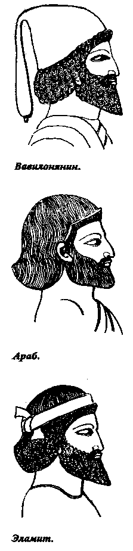
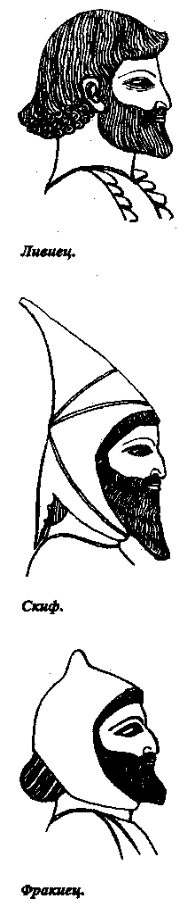
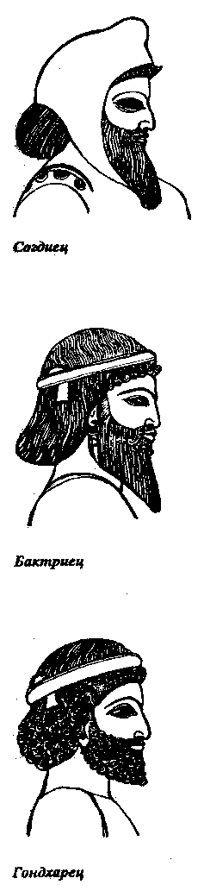
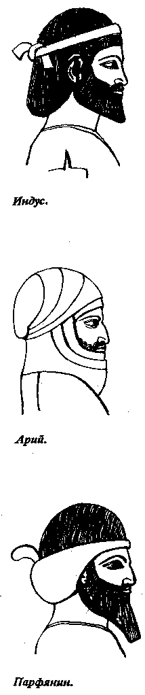
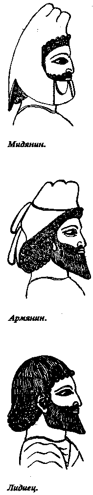
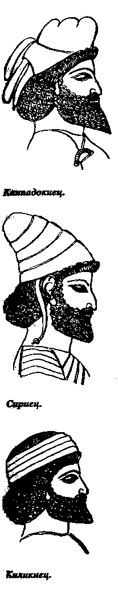
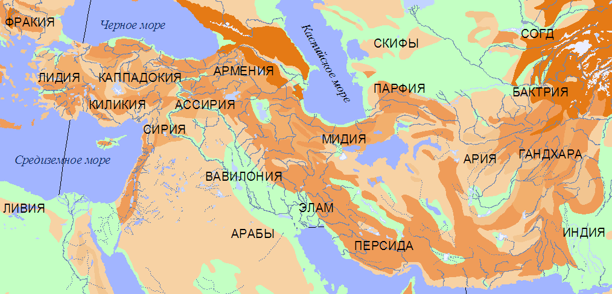
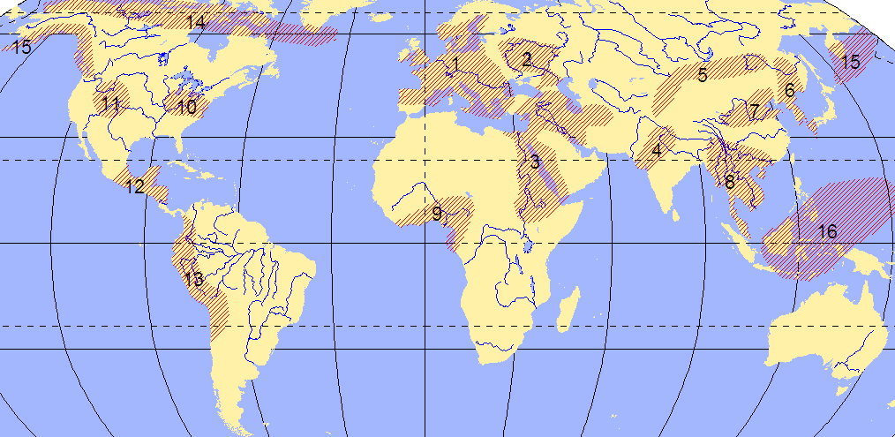
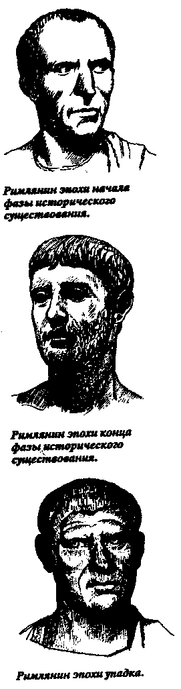
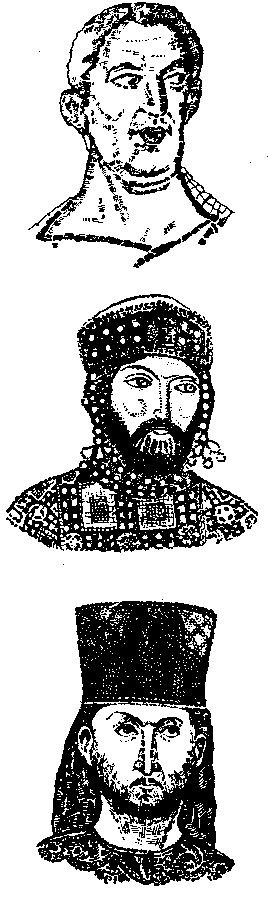

Доложено на заседании Отделения этнографии 17 февраля 1966 г. // Доклады Географического общества СССР. 1967, вып.3 стр. 3-17.
Текст статьи любезно предоставлен Общественной организацией "Фонд Л. Н. Гумилева".
1. Человечество, как биологическая форма, - это единый вид с огромным количеством вариаций, распространившийся в послеледниковую эпоху по всей поверхности земного шара. Густота распространения вида различна, но, за исключением полярных льдов, вся земля - обиталище человека.
Корабли бороздят просторы океанов с глубокой древности; в тропических лесах живут племена пигмеев, приспособившихся к пессимальным условиям существования, в пустынях археологи находят следы древних поселений или охотничьих стоянок, а пространства льдов ныне осваиваются научными экспедициями.
Иными словами, за период своего существования вид Homo sapiens неоднократно и постоянно модифицировал свое распространение на поверхности земли, но, подобно любому другому виду, стремился освоить возможно большее пространство с возможно большей плотностью населения [46, стр.24-31]. Однако что-то ему мешало и ограничивало его возможности.
В отличие от большинства млекопитающих Homo sapiens нельзя назвать ни стадным, ни индивидуальным животным. Человек существует в коллективе, который, в зависимости от угла зрения, рассматривается то как общество, то как народность. Вернее сказать, каждый человек является одновременно и членом общества и представителем народности, но оба эти понятия несоизмеримы и лежат в разных плоскостях, как, например, длина и вес или степень нагрева и энергетический заряд.
Общественное развитие человечества хорошо изучено, и закономерности его сформулированы историческим материализмом. Спонтанное развитие общественных форм по спирали, через общественно-экономические формации, присуще только человеку, находящемуся в коллективе, и никак не связано с его биологической структурой. Этот вопрос настолько ясен, что нет смысла на нем останавливаться.
Зато вопрос о народностях, которые мы будем именовать, во избежание терминологической путаницы, этносами, полон нелепостей и крайне запутан. Несомненно одно: вне этноса нет ни одного человека на земле. Каждый человек на вопрос: "Кто ты?" - ответит: "русский", "француз", "перс", "масаи" и т.д., не задумавшись ни на минуту. Следовательно, этническая принадлежность в сознании - явление всеобщее. Но это еще не все.
2. Этническая принадлежность - не ярлык, а релятивное понятие. Называя себя тем или другим этническим именем, индивидуум учитывает место, время и собеседника, отнюдь не давая себе в этом отчета. Так, карел из Калининской области в своей деревне называет себя карелом, а прибыв в Ленинград - русским, и это без тени лжи. Просто в деревне противопоставление русских каре-лам имеет значение, а в городе не имеет, так как различия в быте и культуре столь ничтожны, что скрадываются. Сложнее с татарами. Религиозное различие углубило этнографическое несходство их с русскими, и для того, чтобы казанский татарин объявил себя русским, ему нужно попасть в Западную Европу или Китай. Там, на фоне совершенно иной культуры, он назовет себя русским, прибавив, что, собственно говоря, он татарин. А в Новой Гвинее он же назовет себя европейцем, что будет правильно относительно папуасов, и пояснит, что он не из племени голландцев или англичан, а из другого, и этим вполне удовлетворит своего собеседника.
Поясним на реальных примерах. Во Франции живут кельты-бретонцы и иберы-гасконцы. В лесах Вандеи и на склонах Пиренеев они одеваются в свои костюмы, говорят на своем языке и на своей родине четко отличают себя от французов. Но можно ли сказать про маршалов Франции Мюрата или Ланна, что они баски, а не французы? Или про д'Артаньяна как исторического персонажа, так и героя романа? Можно ли не считать французами бретонского дворянина Шатобриана и Жиля де Ретца, соратника Жанны д'Арк? Разве ирландец Оскар Уайльд не английский писатель? Знаменитый ориенталист Чокан Валиханов сам говорил о себе, что он считает себя в равной мере русским и казахом. Таким примерам несть числа, но все они указывают, что этническая принадлежность, обнаруживаемая в сознании людей, не есть продукт самого сознания. Очевидно, она отражает какую-то сторону природы человека, гораздо более глубокую, биологическую, лежащую на грани физиологии, внешнюю по отношению к сознанию и психологии, под которой мы понимаем форму высшей нервной деятельности. Этот первичный гипотетический вывод требует пояснений и проверки на материале.
3. Условимся о термине. Это тем более необходимо, что понятие "этнос", с одной стороны, до сих пор не дефинировано, с другой, дефиниция этого понятия является не только исходным пунктом, но и целью исследования. В самом деле, определить понятие - значит установить все его сходства и различия со всеми прочими понятиями. А для исследования сходства и разницы мы должны иметь перед глазами предмет исследования. Получается как бы порочный круг, но это на самом деле диалектический путь науки: сначала условимся о значении употребляемого нами слова-термина, а затем путем анализа раскроем его содержание. Противоречия здесь нет.
В специальной работе [72, стр. 74-77] мы предложили предварительное значение термина: этнос - коллектив особей, противопоставляющий себя всем прочим коллективам. Этнос более или менее устойчив, хотя возникает и исчезает в историческом времени. Нет ни одного реального признака для определения этноса, применимого ко всем известным нам случаям: язык, происхождение, обычаи, материальная культура, идеология иногда являются определяющими моментами, а иногда нет. Вынести за скобку мы можем только одно - признание каждой особи "мы такие-то, а все прочие - другие". Поскольку это явление повсеместно, то, следовательно, оно отражает некую физическую или биологическую реальность, которая и является для нас искомой величиной. Раскрыть эту величину можно только путем анализа возникновения и исчезновения этносов и установления принципиальных различий этносов между собою, а также характера этнической преемственности. Совокупность этих трех проблем мы называем этногенезом.
4. Что нам точно известно об этносах? Очень много и очень мало. Мы не имеем оснований утверждать, что этнос, как явление, имел место в нижнем палеолите. За высокими надбровными дугами, внутри огромной черепной коробки неандертальца, видимо, гнездились мысли и чувства. Но о том, каковы они были, мы пока не имеем права даже догадываться, если хотим остаться на платформе научной достоверности.
О людях эпохи верхнего палеолита мы знаем больше. Они великолепно умели охотиться, делали копья и дротики, одевались в одежду из звериных шкур и рисовали не хуже парижских импрессионистов. По-видимому, форма их коллективного бытия походила на те, которые известны нам, но это только предположение, на котором нельзя строить даже научной гипотезы. Не исключено, что в древние эпохи были какие-нибудь особенности, до нашего времени не дожившие.
Зато народы позднего неолита и бронзы (III-II тыс. до н.э.) мы можем считать подобными историческим с большой долей вероятности. К сожалению, наши знания об этнических различиях в это время отрывочны и скудны настолько, что, базируясь на них, мы рискуем не отличить закономерности, которая нас в данный момент интересует, от локальных особенностей и, приняв частное за общее или наоборот, впасть в ошибку.
Достоверный материал для анализа дает нам так называемая историческая эпоха, когда письменные источники освещают историю этносов и их взаимоотношений. Поскольку мы стоим на философской платформе монизма, понимая под этим, что законы природы едины и вечны, мы вправе, изучив этот раздел темы, применить полученные наблюдения к более ранним эпохам и восполнить пробелы наших знаний, возникающие на первой стадии изучения. Таким образом, мы избегнем аберрации дальности, одной из наиболее частых ошибок исторической критики.
Целесообразно ограничить поле нашего исследования XIX веком, потому что для установления закономерности нам нужны только законченные процессы. Говорить о не-законченных процессах можно лишь в порядке прогнозирования, а для последнего нужно иметь в руках формулу закономерности, ту самую, которую мы ищем. Кроме того, при исследовании явлений XX в. возможна аберрация близости, при которой явления теряют масштабность, как и при аберрации дальности. Нет необходимости ставить под угрозу исследование, привлекая материал не откристаллизовавшийся и не получивший твердого научного истолкования. Поэтому мы ограничимся для постановки проблемы эпохой в 3000 лет, с ХII в. до н.э. по ХIX в. н.э., как наиболее полно изученной.
5. Мы исследуем наш обильный материал путем синхронистической методики, основываясь на сопоставлении cведений, достоверность которых не вызывает сомнений. Новое, что мы собираемся внести, будет сочетание фактов в предлагаемом нами аспекте. Это необходимо, потому
что калейдоскоп дат в хронологических таблицах, приложенных к "Всемирной истории", не дает читателю никакого представления о том, что происходило с народами на протяжении их исторической жизни.
Предлагаемая методика характерна не столько для гуманитарных, сколько для естественных наук, где установление связей между фактами, на основании статистической вероятности и внутренней логики явлений, является единственным путем для построения эмпирического обобщения, которое считается столь же достоверным, как и наблюденный факт [46, стр. 19].
Эмпирическое обобщение не является ни гипотезой, ни популяризацией хотя оно строится не на первичном материале (опыте, наблюдении, чтении первоисточника), а на уже собранных и проверенных фактах. Сведение материала в систему и, построение концепций есть средняя стадия осмысления проблемы, предшествующая философскому обобщению. Для наших целей нужна именно эта средняя ступень.
6. Подобно тому как движение Земли является составляющей из многих закономерных движений (вращение вокруг оси, вращение вокруг Солнца, смещение полюса, перемещение со всей планетной системой по Галактике и многие другие), так и человечество, антропосфера, развиваясь, испытывает не одно, а ряд воздействий, изучаемых отдельными науками. Спонтанное движение, отраженное в общественном развитии, изучается историческим материализмом; физиология человека - область биологии; соотношение человека с ландшафтом - историческая география - находится в сфере географических наук; изучение войн, законов и учреждений - история политическая, а мнений и мыслей - история культуры; изучение языков - лингвистика, а творчества - филология и т.д. Где же помещается наша проблема?
Начнем с того, что этнос, как, например, язык, явление не социальное, потому что оно характерно для всех формаций. Влияние спонтанного общественного развития на становление этносов - экзогенно. Для того, чтобы оказать воздействие на формирование или разложение этносов, линия общественного развития трансформируется через призму истории как политической, так и культурной. Поэтому можно сказать, что проблема этногенеза лежит на грани исторической науки там, где она из гуманитарной плавно переходит в естественную.
Поскольку все явления этногенеза происходят на поверхности земли в тех или иных географических условиях, то неизбежно возникает вопрос о роли ландшафта, как фактора, определяющего экономические возможности человеческих коллективов - этносов [68, стр.70-88; 140, стр. 412-416]. Но сочетания истории с географией для нашей проблемы недостаточно, потому что речь идет о живых организмах, которые, как известно, всегда находятся в состоянии либо эволюции, либо инволюции и взаимодействуют с другими живыми организмами, образуя сообщества - биоценозы.
Таким образом, следует поместить нашу проблему на стыке трех наук: истории, географии - ландшафтоведения и биологии - экологии и генетики. А коль скоро так, то можно дать второе приближение определения термина этнос: этнос - специфическая форма существования вида Homo Sapiens, а этногенез - локальный вариант внутривидовой эволюции, определяющийся сочетанием исторического и хорономического (ландшафтного) факторов.
Может показаться экстравагантным аспект, в котором человечество предстает как антропофауна, но начало этому типу исследований положили Дарвин и Энгельс. Последний даже определил, что стимулом развития цивилизации были не столько идеи или глубокие политические соображения, сколько алчность [176, стр. 176] - эмоция, коренящаяся в сфере подсознания, функция высшей нервной деятельности, лежащей на грани психологии и физиологии. Следуя научной традиции, мы обращаем внимание на ту сторону человеческой деятельности, которая выпадала из поля зрения большинства наших предшественников.
7. При изучении общих закономерностей этнологии прежде всего надлежит усвоить, что реальный этнос и этноним, т.е. этническое наименование, не одно и то же. Часто мы встречаем несколько разных этносов, носящих одно и то же имя, или, наоборот, один этнос может называться по-разному. Так, слово "римляне" (Romani) - первоначально означало граждан полиса Рима, но отнюдь не соседей италиков или даже не латинян, обитавших в других городах Лациума. В эпоху Римской империи I-II вв. количество римлян возросло за счет включения в их число почти всех италиков и многих жителей провинции, отнюдь не латинского происхождения. После эдикта Каракаллы 212 г. римлянами были названы все свободные жители муниципий на территории Римской империи, в том числе: греки, каппадокийцы, евреи, берберы, галлы, иллирийцы, германцы и др. Понятие "римлянин" как бы потеряло этническое значение, но этого на самом деле не было: оно просто его изменило. Общим моментом вместо единства происхождения и языка стало единство даже не культуры, а исторической судьбы. В таком виде данный этнос просуществовал три века - срок изрядный - и не распался. Наоборот, он трансформировался в IV-V вв. вследствие принятия христианства как государственной религии, которая стала после первых четырех соборов определяющим принципом. Те, кто признавал оные соборы, санкционированные государственной властью, были своими, римлянами, а кто не признавал - становился врагом. На этом принципе сформировался новый этнос, который мы условно называем "византийцами", но они-то сами называли себя "ромеями" (Pωμαίοι), т.е. "римлянами", хотя говорили они по-гречески. Постепенно в число ромеев влилось множество славян, армян, сирийцев, но название "римлян" они удержали до 1453 г., до падения Константинополя. Ромеи считали "римлянами" именно себя, а не население Италии, где феодалами стали лангобарды, горожанами - сирийские семиты, а крестьянами - бывшие колоны из военнопленных всех народов, когда-либо побежденных римлянами империи. Зато флорентинцы, генуэзцы, венецианцы и другие жители Италии считали "римлянами" себя, а не греков и на этом основании утверждали приоритет Рима, в котором от античного города оставались только руины.
Третья ветвь этнонима "римляне" возникла на Дунае, где после римского завоевания Дакии было место ссылки. Здесь отбывали наказание за восстания против римского господства фригийцы, каппадокийцы, фракийцы, галаты, сирийцы, греки, иллирийцы, короче говоря, все восточные подданные Римской империи. Чтобы понимать друг друга, они объяснялись на общеизвестном латинском языке. Когда римские легионы ушли из Дакии, потомки ссыльно-поселенцев остались и образовали этнос, который в 19 веке принял название "румыны", то есть "римляне".
Если можно еще усматривать историческую преемственность между "римлянами" эпохи Республики и "римскими гражданами" эпохи поздней Империи, хотя бы как постепенное расширение понятия, функционально связанного с распространением культуры, то у византийцев и римлян нет даже такой связи. Отсюда вытекает, что слово меняет смысл и содержание и не может служить опознавательным признаком этноса. Очевидно надо, учитывать еще и контекст, в котором это слово несет смысловую нагрузку, а тем самым и эпоху, потому что с течением времени значение слов меняется. Это еще более показательно при разборе этнонимов "тюрк", "татар" и "монгол" - пример, мимо которого нельзя пройти.
В VI в. тюрками называли небольшой народ, обитавший на восточных склонах Алтая и Хангая. Путем нескольких удачных войн тюркам удалось подчинить себе все степи от Хингана до Азовского моря, и подданные Великого каганата, сохранив для внутреннего употребления собственные этнонимы, стали называться также тюрками, поскольку они подчинялись тюркскому хану. Когда арабы покорили Согдиану и столкнулись с кочевниками, то они всех их стали называть тюрками, в том числе угров - мадьяр. Европейские ученые в XVIII в. называли всех кочевников "les tartars", а в XIX в., когда вошла в моду лингвистическая классификация, присвоили название тюрок определенной группе языков. Таким образом, в разряд тюрок попали многие народы, которые в древности в их состав не входили, например якуты, чуваши и гибридный народ - турки-османы.
Последние образовались на глазах историков путем смешения небольшой орды туркмен, пришедших в Малую Азию с Эртогрулом, газиев - добровольных борцов за ислам (аналог крестоносцев), славянских юношей, забираемых в янычары, греков, итальянцев, арабов, киприотов и т.п., поступавших на флот, ренегатов-французов и немцев, искавших карьеру и фортуну, и огромного количества грузинок, украинок и полек, продаваемых татарами на невольничьих базарах. Тюркским был только язык, ставший государственным, потому что он был принят в армии. И эта мешанина слилась в монолитный народ, присвоивший себе название "турк" в память тех степных богатырей, которые 1000 лет назад стяжали себе славу на равнинах Центральной Азии. Опять этноним отражает не истинное положение дел, а традиции и претензии.
Модификация же этнонима "татар" является примером прямого камуфляжа. До XII в. это было этническое название группы из 30 крупных родов, обитавших на берегах Керулена. В XII в. эта народность усилилась, и китайские географы стали употреблять его как название всех центральноазиатских кочевников: тюркоязычных, монголоязычных и тунгусоязычных, в том числе монголов. Когда же Чингисхан в 1206 г. объявил официальным названием своих подданных имя "монгол", то соседи по привычке некоторое время продолжали называть монголов татарами. В таком виде слово "татар", как синоним слова "монгол", попало в Восточную Европу и привилось в Поволжье, где местное население в знак лояльности хану Золотой Орды стало называть себя татарами. Зато потомки первоначальных носителей этого имени стали именовать себя монголами. С этого времени возникла современная научная терминология, когда татарский антропологический тип стали называть "монголоидным", а язык поволжских тюрок-кипчаков - татарским языком. Иными словами говоря, мы даже в науке употребляем заведомо закамуфлированную терминологию.
Привычных примеров достаточно, чтобы констатировать, что этническое название или даже самоназвание и явление этноса как устойчивого коллектива особей вида Homo sapiens отнюдь не покрывают друг друга. Поэтому филологическая методика, исследующая слова, для этнологии неприменима, и нам надлежит обратиться к истории, дабы проверить, насколько эта дисциплина может помочь при постановке и решении нашей проблемы.
8. История - наука о событиях в их связи и последовательности. Эталоном, которым пользуется историческая наука, является общественный институт, коим может быть государство, племенной союз, религиозная секта, торговая компания (например, Ост-Индская), политическая партия и т.д., словом любое учреждение в любых веках и у любых народов. Иногда институт государства и этнос совпадают, и тогда мы наблюдаем в ряде случаев нации современного типа. Но это частный случай, характерный для XIX-XX вв., а в древности такие совпадения были редкими. Случается, что религиозная секта объединяет единомышленников, которые, как, например, сикхи в Индии, сливаются в этнос, и тогда происхождение особей, инкорпорированных общиной, не принимается во внимание. Но часто такие общины, обладающие всеми качествами этноса, неустойчивые и дробятся, как это было с мусульманской общиной эпохи халифата (VII-X вв.).
Конечно, общность исторической судьбы способствует образованию и сохранению этноса, но и исторически судьба может быть одной у двух-трех народностей и разной для двух половин одной народности. Например, англосаксы и уэльсские кельты объединены с XIII в., однако они не слились в один этнос, что, впрочем, не мешает им жить в мире, а у армян восточных, подчиненных еще в III в. Ирану, и западных, связанных с этого же времени с Византией, судьбы были различны, но этническое единство не нарушилось. В XVI-XVII вв. французские гугеноты и католики весьма различались по своим историческим судьбам, да и по характеру культуры как до издания Нантского эдикта, так и после отмены его. Однако этническая целостность Франции оставалась неизменной, несмотря на кровопролитные войны и драгонады.
Следовательно, этническое становление лежит глубже, чем явления исторического процесса. История может помочь этнологии, но не заменяет ее.
9. Многие этносы делятся на племена и роды. Можно ли считать это деление обязательной принадлежностью этноса, или хотя бы первичной стадией его образования, или, наконец, формой коллектива, предшествовавшей появлению самого этноса? Имеющийся в нашем распоряжении достоверный материал позволяет ответить - нет!
Прежде всего, далеко не все современные народы имеют или имели когда-либо за все время своего существования родовое или племенное деление. Такового нет и не было у испанцев, французов, итальянцев, румын, англичан, турок-османов, великороссов, украинцев, сикхов, греков (не эллинов) и многих других. Зато клановая или родовая система существует у кельтов, казахов, монголов, тунгусов, арабов, курдов, и ряда других народов. Считать клановую систему более ранней стадией трудно, так как византийцы или сасанидские персы, народы, образовавшиеся на 1000 лет раньше, чем монголы, и на 1200 лет раньше, чем казахи, виликолепно обходились без родов и фратрий. Конечно, можно предположить, что в древности система родов была повсеместной, но даже если это так, то к историческому периоду, когда народы (этносы) возникали на глазах историка, такое допущение не имеет отношения.
То, что господствующими во всем человечестве формами за все время существования вида Homo были разные формы семьи: групповой брак, семья пуналуа, парный брак, моногамная семья [176, стр. 77], - и общественные системы - формации, достаточно обоснованно и доказано, но к нашей проблеме не имеет непосредственного отношения, так как этническая целостность не совпадает ни с семейной ячейкой, ни с уровнем производства и культуры. Поэтому в нашем исследовании мы должны искать другие критерии и другие опознавательные признаки.
Вместе с тем необходимо отметить, что у народов с родо-племенным устройством деление на кланы (у кельтов), фратрии, кости ("сеок" у алтайцев) и племенные объединения (джус у казахов) и т.п., эти внутриэтнические единицы необходимы для поддержания самого этнического единства. Путем разделения на группы регулируются отношения как отдельных особей к этносу в целом, так и родовых или семейных коллективов между собою. Между прочим, только этим способом вводится и сохраняется экзогамия, предотвращающая кровосмесительные браки. Представители родов выражают волю своих соплеменников на народных собраниях и создают устойчивые союзы родов для ведения внешних войн, как оборонительных, так и наступательных. В Шотландии, например, клановая система выдержала набеги викингов в X в., нападения феодалов в XII-XV вв., войну с английской буржуазией в XVII- XVIII вв., и только капиталистические отношения смогли ее разрушить. А там, где клановая система бала менее выражена, например у полабских славян, немецкие и датские рыцари расправились с ними за два века (XI-XII вв.), несмотря на бесспорную воинственность и завидное мужество бодричей, лютичей и жителей острова Руги. Деление этноса на племена несет функцию скелета, на который можно наращивать мышцы и тем самым набирать силу для борьбы с окружающей средой.
10. Но как же восполняется отсутствие родоплеменных групп у народов вполне развитых, находящихся на стадии классового общества? Классовая структура общества и классовая борьба - факт, установленный и не подлежащий пересмотру. Следовательно, деление на классы не может быть функционально аналогично делению на племена. И действительно, параллельно делению общества на классы мы обнаруживаем деление этносов на группы, отнюдь не совпадающие с классовыми. Условно их можно назвать консорциями, но это слово соответствует понятию лишь в первом приближении.
Например, в феодальной Европе внутри одного этноса, скажем французского, господствующий класс состоял из разных консорций: 1) феодалов в прямом смысле слова, то есть держателей ленов, связанных с короной вассальной присягой; 2) рыцарей, объединенных в ордена; 3) нотаблей, составляющих аппарат королевской власти [nobless de robe]; 4) высшего духовенства; 5) ученых, например, профессоров Сорбонны; 6) городского патрициата, который сам делился по территориальному признаку, и т.д. Можно по принятой степени приближения выделить больше или меньше групп, но при этом надо обязательно учитывать еще их принадлежность к партиям, например, арманьякской и бургундской в начале XV в. А по отношению к народным массам такое разделение применимо в еще большей степени, так как каждая феодальная провинция носила тогда ярко выраженный индивидуальный характер.
В буржуазном обществе мы наблюдаем уже не те консорций, но принцип остается неизменным. Внутри этносов и помимо классов есть для каждой особи люди "своего" и не своего круга.
То, что "консорции", как мы их условно назвали, неизмеримо менее стойки и длительны, чем родоплеменные группировки, бесспорно, но ведь и последние не вечны. Значит, разница между теми и другими не принципиальна. Сходство же их в том, что они несут одинаковую функциональную нагрузку, поддерживая единство этноса путем внутреннего разделения.
И самое важное и любопытное - это то, что при возникновении "консорции" отличаются друг от друга лишь нюансами психологии, но со временем различия углубляются и кристаллизуются, переходя в обычаи и обряды, т.е. в явления, изучаемые этнографами. Например, старославянский поцелуйный обряд трансформировался в России в целование руки замужним дамам и сохранился у поместного дворянства, но исчез из быта других слоев населения.
А.М. Горький, наблюдавший в крупных городах Поволжья быт мещан и интеллигентов-разночинцев, констатирует такие глубокие различия, что предлагает рассматривать эти недавно сложившиеся группы населения как "разные племена" [53, стр. 81]. В том смысле слова, в котором он его употребляет, т.е. как различия в быте, нравах, представлениях, он прав, и наблюдение его плодотворно. В наше время эти различия почти стерлись. Они были характерны для короткого периода около 80 лет, но мы уже говорили, что продолжительность явления не влияет на принципиальную сторону дела.
Еще характернее другой пример - старообрядцы. Как известно, это небольшая часть великороссов, не принявших в шестидесятых годах XVII в. некоторых реформ церковного обряда. Тогда они еще ничем не выделялись среди прочего населения. Во втором поколении, при Петре I, они составляли определенную изолированную группу населения. К концу ХVIII в. у них появились, а отчасти сохранились, обычаи, обряды, одежды, резко отличные от тех, которые стали общепринятыми. Екатерина II прекратила гонения на старообрядцев, но это не повело к обратному слиянию их с основной массой этноса. В новообразовавшуюся внутриэтническую целостность входили и купцы-миллионеры, и казаки, и полунищие крестьяне из Заволжья. Эта единица, сначала объединенная общностью судьбы - consortia, постепенно превратилась в единицу, объединенную общность быта - convixia, и лишь в XX в. постепенно стала рассасываться, так как повод для ее возникновения давно перестал существовать, а оставалась только инерция.
Примеры, приведенные нами, ярки, но редки. Чаще функции внутриэтнических группировок принимают на себя естественно образующиеся территориальные объединения - землячества. Наличие таких делений, как и при родовом строе - существование фратрий, не подрывает этнического единства.
Теперь мы можем сделать вывод: внутриэтническое дробление есть условие, поддерживающее целостность этноса и придающее ему устойчивость; оно характерно для любых эпох и стадий развития.
11. Итак, ни одна из гуманитарных наук не дает ответа на существо проблемы этнологии и этногенеза и даже не позволяет создать терминологию, которая была бы точна и общепонятна. Поэтому попробуем обратиться к естественным наукам - географии и примыкающим к ней разделам биологии.
Мы уже говорили, что целесообразно рассматривать человечество как вид Homo sapiens. Но тогда все закономерности-развития любого вида млекопитающих применимы к людям, разумеется, за исключением специфических особенностей, что в высшем аспекте не существенно. Всем видам животных свойственны инстинкт продолжения вида (размножение), стремление распространить свое потомство на наибольшую возможную площадь, пригодную для жизни (ареал), и способность приспособления к среде (адаптация). В отношении этих общих черт люди не являются исключением.
Однако распространение любого животного вида ограничено тем. что каждый вид входит в биоценоз - закономерный комплекс форм, исторически, экологически и физиологически связанных в одно целое общностью условий существования [140 стр.359]. Каждый биоценоз связан с участком земной поверхности, который он занимает и к которому он приспособлен. Такой участок называется биохор. Поскольку биоценоз - связная система и изменение в ней какого-нибудь одного звена ведет к изменению и остальных звеньев, то в этом отношении налицо полная аналогия с географическим ландшафтом [140, стр.359]. А так как каждый биохор связан с определенным ландшафтом, то целесообразно принять термин, предложенный академиком В.Н. Сукачевым, - геобиоценоз, совмещающий биологические и географические особенности данного биохора. Геобиоценозы динамичны. Они меняются вследствие сложного переплетения экзогенных импульсов. Смена геобиоценозов носит название сукцессии-[140, стр.362].
При возникновении биоценоз складывается из животных и растительных форм, примеряющихся к условиям заселяемого ими ландшафта. В результате приспособления возникает новый адаптивный тип сообществ, приобретающий новые особенности структуры поведения.
Таким образом, любой животный вид модифицируется под воздействием адаптации. Степень модификации определяется разнообразием географических условий заселяемого видом ареала. Но чаще всего возможности изменения ограничены, так как вид, успевший накопить ряд определенных признаков, не может произвольно избавиться от них, согласно закону о необратимости эволюции. Поэтому большинство видов животных имеет ограниченные ареалы. Человек же, как мы уже отметили, распространился по всей земной поверхности. В этом одно из важнейших отличий вида Homo sapiens от прочих видов млекопитающих.
Но потребность в адаптации у людей осталась и проявляется особенно сильно именно вследствие широкого распространения вида как целого. Замечено, что отдельные этносы при своем возникновении связаны с определенными ландшафтными условиями - биохорами. Следовательно, исходя из сказанного, мы можем охарактеризовать этнос как биологическую единицу, таксономически стоящую ниже вида, как populatio, а само этническое деление человечества как один из способов адаптации в ландшафтах не столько в структуре, сколько в поведении. Путем применения естественных наук отыскана дефиниция, которую мы бесплодно искали в науках гуманитарных. Эта важная проблема будет освещена специально в особом докладе.
Но тут сразу же возникает сомнение: а как же люди столько веков без высокоразвитых наук оперировали таким сложным понятием, как "этнос", и не путались в практическом применении его? И почему путаница возникла, как только в XIX в. появилась наука этнография? И не значит ли это, что научное осмысление этнических явлений не нужно или вредно?
Мы наблюдаем в природе множество явлений, которые либо не поддаются определениям, либо определения бывают тавтологиями. Например, как определить такое явление, как "время"? А считать его мы умеем достаточно точно. Понятие "сила" определяется в физике как "причина, вызывающая ускорение", но ведь это тавтология. В физиологии наблюдается явление "клинической смерти", которая по существу еще жизнь, и т.д. Очевидно, мы, люди, знаем гораздо больше, чем можем назвать словами, и только в спекулятивной философии "знание" и "название" совладают, но ведь спекулятивная философия не ставит своей целью изучение реального мира.
Этнические различия реальны и воспринимаются людьми безотчетно. При простых этнических сочетаниях не возникает нужды в осмыслении явления, которое и без того всем понятно. Но по мере накопления материала и усиления связей между народами всего земного шара потребность в осмыслении усилилась и возникла необходимость в систематизации знаний. Наука XIX в., стоявшая на позициях спекулятивной философии идеализма и его варианта - вульгарного материализма, не справилась с поставленной задачей. Главным препятствием тому было резкое отграничение всего, что относится к человечеству, от того, что касается остальной природы, как живой, так и мертвой. Исключение было сделано только для медицины, и то потому, что сами философы предпочитали быть вылеченными от болезней.
Как мы показали выше, граница между специфически человеческой и натурально-фаунистической сферами существует, но проходит она не там, где ее помещали философы и социологи XIX в. В частности, этнические явления лежат в сфере природы и поэтому осмысление их возможно лишь путем применения той самой методики, которая дала такие блестящие результаты в физической географии, зоологии и учении о наследственности. Сочетание этих наук с историей полагает начало новой науке - этнологии, практическое значение которой очевидно и неоспоримо.
12. Однако, проведя границу между этнологией и гуманитарными науками, мы обязаны указать ее отличие от чисто биологической дисциплины - антропологии, науки о человеческих расах. Расы тоже рассматриваются как таксономические единицы ниже вида (subspecies), но здесь классификация идет по соматическим признакам, а в этнологии по характеру поведения. Расы и этносы - понятия не только не совпадающие, но исключающие друг друга, потому что каждый этнос состоит из смешения двух и более рас первого или второго порядка, а каждая раса входит в состав многих этносов. Сочетания рас первого порядка, например европеоидов и негроидов, имели место в Индии, европеоидов и монголоидов - в Средней Азии и Латинской Америке, монголоидов и негроидов - в восточной Индонезии, и это не мешало сложению этнических коллективов. В Европе, Южной Африке, Америке и Полинезии происходило смешение рас второго порядка, например во Франции смешались северная, альпийская и средиземноморская европеоидные расы, в Германии - северная и альпийская, на Балканах - динарская и средиземноморская, а в Европейской России насчитывается пять расовых компонентов второго порядка, не говоря о пришлых монголоидных элементах.
Зато чистой в расовом отношении народности нет нигде. Даже скандинавы не избежали смешения, хотя оно произошло во II тыc. до н.э., когда арийские племена проникли в Европу и смешались с неолитическими племенами Прибалтики. В образовании племен Новой Гвинеи участвовали папуасы и меланезийцы, резко отличные друг от друга, и даже на острове Пасхи обнаружены два расовых компонента: короткоухие и длинноухие, по соматическим и психическим признакам не идентичные. Расовая теория к этнологии неприменима.
Следовательно, этносы отличаются друг от друга чем-то другим, хотя и не менее значительным.
Вспомним, что каждый этнос с момента возникновения делится на составные части: либо роды и фратрии, либо племена, либо "консорции", сочетание которых практически неповторимо. Это значит, что каждый этнос имеет оригинальную структуру, которая воспринимается людьми как этническая целостность. В тех же случаях, когда структура стирается и этнос находится на грани ассимиляции другими этносами, остается инерция, т.е. традиция. До тех пор пока инерция не иссякнет, люди, принадлежавшие к данному этносу, будут относить себя к нему. И тут не имеет значения, говорят ли эти люди на языке своих предков, соблюдают ли они их обряды, чтят ли свои древние памятники, живут ли на земле, породившей их структуру. В чем кроется механизм сложения, устойчивости, изменчивости и исчезновения этнических коллективов - это основная проблема этнологии, о которой следует говорить особо. Пока же отметим, что этническая структура всегда возникает в определенных и неповторимых географических условиях, в том или ином ландшафте. Поэтому, определив расу как подвид в аспекте биологии, мы вправе отнести понятие "этнос" к разряду географических наук, в ту область, где они смыкаются с историческими.
Доложено на заседании Отделения этнографии 19 мая 1966 г. // Доклады Географического общества СССР, 1967. вып.3, стр. 90-107.
1. Тезис: человек - млекопитающее животное; человечество - один из видов отряда приматов (гоминид); закономерности развития человечества не отличаются принципиально от закономерностей развития любого другого вида - в середине XIX в. был лозунгом того материализма, который мы теперь называем механическим или вульгарным.
Не то чтобы этот тезис был полностью неверным. Человек, действительно, несет в себе зоологическую природу, и многое в его жизни и поведении объясняется натуральными инстинктами и физиологическими потребностями, не меняющимися за все время существования вида Homo sapiens [237]. Но нельзя переносить биологические законы в сферу социальной жизни непосредственно. Поэтому Маркс и Энгельс признали, что теория биологической эволюции имеет величайшее значение не только в области чисто биологических вопросов, но и как основание и дополнение к теории исторического материализма и лежащей в его основе философии. В то же время они понимали, насколько важно избежать ошибки Геккеля, Герберта Спесера и др., отождествлявших процессы и законы биологической и социальной эволюции, так как последние являются эпифеноменами по отношению к первым и протекают по собственным законам, зависящим от специфических особенностей, приобретенных самим человеком. Таким образом, хотя понимание биологической эволюции и необходимо для правильного направления человеческой деятельности, оно само по себе еще не дает нам разрешения социальных проблем, но служит известным основанием для их рассмотрения [180, стp.VIII].
Можно считать установленным, что человечество, со всеми его взаимосвязями, явление не простое, а сложное. Люди, и каждый человек в отдельности, являются и физическими телами, подвластными силе тяжести; и организмами, вмещающими в себе бактерии и других микробов; и млекопитающими животными с определенной продолжительностью жизни; и членами обществ, развивающихся в силу собственной закономерности; и, наконец, представителями этнических сообществ: племен, народностей, наций и т.п. Наблюдаемые простым глазом явления, касающиеся человечества в целом, не что иное, как составляющая, где участвуют факторы не только все перечисленные, но и многие другие.
Для того чтобы от обывательского восприятия перейти к научному анализу, надлежит расчленить все факторы и рассмотреть каждый в отдельности. Совершенно правильно отметил С.В. Калесник: "Для того, чтобы изучать взаимодействие, нет необходимости путать разные вещи" [142, стр.249]. Их скорее необходимо разделять. И вот, отграничив этногенез от социального развития, мы должны проделать ту же работу для размежевания зоологии и этнологии.
Ю.К. Ефремов определяет антропосферу как "совокупность человеческих организмов" или "биомассу в 150 млн. тонн живого веса". При этом он учитывает ее организованность и включает в антропосферу производительные силы и производственные отношения [126, стр.50]. Так вот посмотрим, что здесь от биологии, а что специфически присуще человеку.
Напомню, что этносом мы называем коллектив особей, противопоставляющий себя всем прочим коллективам и имеющий оригинальную внутреннюю структуру. Это определение предварительное, для раскрытия которого нужно дать общее описание свойств, присущих этносу, как таковому, а также положить основу для этнической классификации. Но что значит описать? Только одно: сравнить изучаемый предмет с другим, уже известным, и отметить их сходство и различие.
С чем сравнить этнос? Очевидно, с явлениями, изучаемыми сопредельными науками: с общественными формациями, которыми занимается социология, с популяциями вида, которые исследуются биологией, и ландшафтами, составляющими предмет физической географии, а вернее, зоогеографии.
По принятой Аристотелем зоологической систематике, этнос - мельчайшая таксономическая единица, определяемая не столько по признакам соматическому или физиологическому, сколько по поведению. Иными словами, представители одного и того же этноса в определенных критических условиях реагируют сходно, а члены иных этносов по-иному. Собственно, только в этом и проявляется "психический склад", считающийся одним из признаков нации. Разумеется, здесь должны приниматься во внимание только статистические средние из достаточно больших чисел, с уклонениями во все стороны. Однако, поскольку мы почти всегда имеем дело либо с народами многочисленными, пусть недостаточно обособленными, либо с народностями, четко отграниченными от соседей, пусть даже численно малыми, то отмеченная неопределенность является величиной, которой должно пренебречь. Этнос, как и вид, по определению Аристотеля, "это не сводимая ни на что другое особенность, делающая предмет тем, что он есть" [29, стр.268). Именно поэтому этнос не является ни спекулятивной категорией, ни философским обобщением тех или иных черт. Он ощущается нами непосредственно, как свет, тепло, электрический разряд, и, следовательно, должен изучаться как одно из явлений природы, биосферы, а не как гуманитарная концепция, возникающая в мозгу наблюдателя.
В отличие от социальных таксономических единиц, как _ принятых в историческом материализме - формации, так и в буржуазной западноевропейской социологии - цивилизации, этносы при возникновении связаны с определенными ландшафтными районами. Для общественного развития наличие этносов является только фоном, правда необходимым, потому что если нет людей, то нет и закономерностей общественного развития, а люди до сих пор не существовали вне этносов.
Это последнее положение может вызвать возражения, потому что рабы в древнем мире или интернациональные авантюристы, космополиты, сами затруднялись определить, к какому народу их следует причислить.
Для прояснения проблемы следует отметить, что очень редкие этносы, реликтовые племена, существуют изолированно, но там проблема внеэтничного существования отдельных особей не возникает. Их там просто не бывает и быть не может, потому что изгнанник, лишенный поддержки коллектива, обречен на гибель.
Сложнее с особями, не помнящими родства, например, с рабами, зачатыми в лупанариях. По происхождению и правовому положению они не были римлянами. Это значит, что они не входили в официальное римское общество, но поскольку последнее без них не могло существовать, то мы имеем право причислить рабов к римскому этносу, в смысле современном, а не древнеримском, где рабов называли говорящими орудиями.
Затем, при образовании этносов всегда возникает несколько новых коллективов, образующих более или менее крепкую конструкцию. А в промежутках между отдельными этносами часто обретаются промежуточные особи, но они не выходят за пределы своей системы. Так, в XVI в. кондотьер мог служить Валуа, Габсбургу, Тюдору или Медичи, не становясь ни французом, ни испанцем, ни англичанином, ни тосканцем и даже не задаваясь вопросом, кто же он по этносу. Но, поступая на службу к турецкому султану, он становился турком, т.е. менял этнос. Это было настолько распространено, что даже существовал специальный термин - ренегат.
Что же менялось в ренегате? Ясно, что не физиология, не анатомия, не генофонд. Менялся стереотип поведения, без него ренегат не мог быть инкорпорирован новым коллективом. В единой системе этносов, например в романо-германской Европе, называвшейся в XVI в. "христианским миром" (хотя в него не включались православные народы), стереотип поведения разнился мало, и этой величиной можно было пренебречь. Но в системе, условно именовавшейся "мусульманскими народами", он был настолько иным, что переход отмечался специально и был связан с юридическим актом - сменой исповедования веры. Совсем не играло роли то, что по большей части ренегат вообще не имел религиозных мнений. Важно было отметить, что он порвал с прошлым и включился в новый коллектив, иными словами, совершил акт приспособления к повой среде. А пластичность характерна для многих видов животных и описана М.Е. Лобашевым, который сформулировал следующие выводы, применимые и к нашему материалу:
"Процессы индивидуального приспособления у всех животных осуществляются с помощью механизма условного рефлекса.
Приобретение в онтогенезе условных связей с реальной действительностью обеспечивает животному анализ и синтез факторов внешней среды и активный выбор оптимальных условий для своего существования по данным сигналов.
Своевременная информация через сигналы о приближающихся событиях обеспечивает животному возможность осуществить профилактические адаптивные реакции и подготовить адекватным образом функциональное состояние организма.
3) Функциональная преемственность наблюдается: между поколениями - родителями и потомством, членами сообщества или стада, а для человека - преемственность цивилизации" [171, стр.4-5].
Отсюда "поведение как приспособление целого организма является высшей формой активной адаптации". Один и тот же вид животного может дать особи светолюбивые и темнолюбивые, холоднолюбивые и теплолюбивые, что отвечает хорономическому принципу номогенеза [171, стр.5; 29, стр.180].
Условнорефлекторная (сигнальная) преемственность между поколениями осуществляется через контакт новорожденного 1) с родителями и 2) членами сообщества [171, стр.8], что в применении к человеку называется традицией, которая не что иное, как стереотип поведения, передающийся путем сигнальной наследственности.
"Сигнальная наследственность для понимания развития человека и его цивилизации приобретает особое значение, так как ее положения полностью опровергают наличие расовых различий духовных свойств человека. Речь - "сигнал сигналов" - создает условия для возрастания роли сигнальной или условной наследственности, обеспечивающей преемственность опыта между поколениями на основе физиологического механизма временной связи" [171, стр.10].
Теперь переведем выводы генетика на язык этнолога. "Условные связи с действительностью, приобретаемые в онтогенезе", - это воспитание ребенка и обучение его тому, чем он будет всю жизнь кормиться и защищаться от врагов. В Полинезии учат плавать, в Сибири - ходить на лыжах, в древней Монголии - стрелять из лука и ездить верхом, в Европе - грамоте, чтобы человек читал газеты и принимал "профилактические меры" для избавления себя от неприятностей. Поведение, т.е. способность приспособить организм к новым условиям, рассматривается как результат биологического признака - способности к изменчивости. Но последняя не безгранична, и потому мы наблюдаем вымирание новых видов или, в нашем случае, этносов.
Появление же новых этносов, в данном аспекте, означает, что в силу способности к изменчивости изменился стереотип поведения, и, значит, возникла новая традиция или сигнальная наследственность, иными словами, новая культура, не частностями, а коренным образом отличающаяся от прежней. Тем же самым определяется переход особи из одного этнического коллектива в другой, достаточно далекий, т.е. явление ренегатства или инкорпорирование "чужака" (при родовом строе).
Отсюда же вытекает, что нет людей вне этноса. Человек может не знать своего происхождения, забыть родной язык, не иметь никаких религиозных или атеистических представлений, но без поведения в коллективе он жить не может. А поскольку именно характером поведения определяется этническая принадлежность, то все люди сопричастны этносфере. Поэтому биологический подход, как и географический, позволяет рассмотреть этнос как явление глобальное, имеющее собственные закономерности становления, т.е. появления, видоизменения и исчезновения. Рассмотрению этих свойств этноса, как такового, будут посвящены следующие разделы.
2. Одним из наиболее важных свойств вида Homo sapiens является его приспособленность к различным природным условиям. Иначе этот вид не мог бы распространиться так широко по поверхности Земли. Однако изучение миграций показывает, что в подавляющем большинстве случаев способность к адаптации весьма ограниченна.
При миграциях народы стремятся выбрать географические условия ландшафта, как можно более напоминающие родину. Так, англичане не заселили ни Индию, ни тропическую Африку, ни Малакку и Саравак, оставаясь там на положении колониальных чиновников, непосредственно не связанных с природой этих стран. Зато они наводнили страны умеренного пояса: Северную Америку, Южную Африку, Австралию и Новую Зеландию. Русские крестьяне расселились по лесостепной полосе Сибири, а казаки - по долинам сибирских рек, тюрки - по водораздельным степям, арабы осваивали оазисы среди пустынь, эллины - берега Средиземного моря и т.д. При этом этническая инерция была настолько сильна, что, даже меняя ареал, народы сохраняли свойственный им облик.
Евреи в Салониках живут эндогамной группой свыше 400 лет после своего изгнания из Испании, но до сих пор, по данным 1918 г., они скорее похожи на арабов, чем на своих соседей, греков. Точно так же немцы из Венгрии походят на своих соседей, соплеменников из Германии, а цыгане - на индусов. Отбор изменяет соотношение признаков медленно, а мутации, как известно, редки. Поэтому любая народность находится почти в состоянии равновесия.
Но не следует думать, что изменение условий существования не влияет на этносы никогда. Иной раз оно влияет настолько сильно, что образуются новые признаки и создаются новые этнические варианты, более или менее устойчивые [29, стр.245|. Нам надлежит разобраться в том, как происходят эти процессы и почему они дают разные результаты.
Поскольку речь идет о "поведении" особей, входящих в разные этносы, то самое простое обратить внимание на то, как они воздействуют на те или иные природные ландшафты, в которые их забрасывает историческая судьба. Иными словами, нам надлежит проследить характер и вариации антропогенного фактора ландшафтообразования с учетом уже отмеченного нами деления человечества на этнические коллективы.
С.В. Калесник отметил, что на "земном шаре к настоящему времени почти не осталось ландшафтов, не затронутых воздействием человеческого общества" [140, стр.424-425]. Вместе с тем он указал на то, что существуют "различия в целях, степени и характере воздействия человека на его природное окружение" (140, стр. 410], и этим открыл перспективы для дальнейшей разработки темы.
Дело не в том, насколько велики изменения, произведенные человеком, и даже не в том, благодетельны они по своим последствиям или губительны, а в том, когда, как и почему они происходят.
3. Бесспорно, что ландшафт и рельеф промышленных районов и областей с искусственным орошением изменен больше, чем в степи, тайге, тропическом лесу и пустыне, но если мы попытаемся найти здесь социальную закономерность, то столкнемся с непреодолимыми затруднения-ми. Земледельческая культура майя в Юкатане была создана в V в. до н.э. при господстве родового строя, пришла в упадок при зарождении классовых отношений и не была восстановлена при владычестве Испании, несмотря на внесение европейской техники и покровительство крещеным индейцам. Хозяйство Египта в период феодализма медленно, но неуклонно приходило в упадок, а в Европе в то же время и при тех же социальных взаимоотношениях имел место небывалый подъем земледелия и ремесла, не говоря о торговле. В плане нашего исследования это означает, что ландшафт в Египте в это время был стабильным, несмотря на напряженность политической борьбы, а в Европе преображался радикально. Внесение же антропогенных моментов в рельеф Египта в XIX в. - прорытие Суэцкого канала - связано с проникновением туда европейских народов, французов и англичан, а не деятельностью аборигенов - феллахов.
В Англии ХVIII в., по Томасу Мору, "овцы съели людей" при начинающемся капитализме, а в Монголии ХIII- XIV вв. овцы съели тунгусов-охотников, живших на южных склонах Саян, Хамар-дабана и на севере Большого Хингана, хотя там даже феодализм был неразвитым. Монгольские овцы съедали траву и выпивали в мелких источниках воду, служившие пищей и питьем для диких копытных [57]. Число последних уменьшалось, а вместе с тем охотничьи племена лишались привычной пищи, слабели, попадали в зависимость к степнякам-скотоводам и исчезали с этнографической карты Азии. Еще примеры: Азорские острова превращены в голые утесы не испанскими феодалами, которые свирепствовали в Мексике и Нидерландах, а козами; последних же высадили там астурийцы и баски, у которых еще не исчез родовой строй. Бизонов в Америке уничтожили члены капиталистического общества, а птицу-моа в Новой Зеландии - полинезийцы, не знавшие еще классового расслоения; они же акклиматизировали на своих островах американский картофель, а в России для той же цели понадобилась вся военно-бюрократическая машина императрицы Екатерины II. Отсюда следует, что закономерность лежит в другой области.
4. Поставим вопрос по-иному: не как влияет на природу человечество, а как влияют на нее разные народы на разных стадиях своего развития? Этим мы вводим господствующее звено, которого до сих пор и не хватало. Тогда возникает новая опасность: если каждый народ, да еще в каждую эпоху своего существования, влияет на природу по-особому, то обозреть этот калейдоскоп невозможно и, отказавшись от заведомо неверных выводов, мы рискуем лишиться возможности сделать какие бы то ни было обобщения, а следовательно, и осмыслить исследуемое явление.
Но тут приходят на помощь обычные в естественных науках классификация и систематизация наблюдаемых фактов, что в гуманитарных науках не получило еще должного применения. Поэтому, говоря о народностях (этносах) в их отношении к ландшафту, мы остаемся на фундаменте географического народоведения, не переходя в область гуманитарной этнографии.
Отказавшись от основ этнической классификации, принятой в гуманитарных науках, - расовой, общественной, материальной культуры, религии и т.п., - мы должны выбрать исходный принцип и аспект, лежащие в географической науке. Таковым может быть явление биоценоза, под которым понимается "закономерный комплекс форм, исторически, экологически и физиологически связанных в одно целое общностью существования" [140, стр.359]. Следовательно, люди также входят в биоценозы населяемых ими биохоров.
Биоценоз - образование устойчивое, формы, его составляющие, связаны воедино "цепью питания", то есть одни виды питаются другими. "Цепь питания" обычно заканчивается крупным хищником или человеком. Характерной особенностью биоценозов является постоянная соразмерность между числом особей во всех формах, составляющих комплекс. Например, количество волков на данном участке зависит от количества зайцев и грызунов, а последние лимитируются количеством травы и воды. Соотношение это обычно колеблется в пределах допуска и нарушается редко и ненадолго.
Казалось бы, эта картина не имеет отношения к человеку, однако это не всегда так. Есть огромное количество этнических единиц, пусть численно ничтожных, входящих в состав биоценозов на тех или иных биохорах. По сравнению с этими мелкими народностями, или иногда просто племенами, современные и исторические цивилизованные этносы - левиафаны, но их мало, и они, как показывает история, не вечны. Вот на этой основе мы и построили нашу первичную классификацию: 1) этносы, входящие в биоценоз, вписывающиеся в ландшафт и ограниченные тем самым в своем размножении; этот способ существования присущ многим видам животных, как бы остановившимся в своем развитии. Лишайники, т.е. симбиоз водоросли с грибом, - существуют с кембрия, тараканы и стрекозы - с карбона, крокодилы - с триасового, а муравьи и термиты - с мелового периода [47, стр.269, 285]. В зоологии эти виды называются персистентами, и нет никаких оснований не применить этот термин к этносам, застывшим на определенной точке развития. И 2) этносы, интенсивно размножающиеся, расселяющиеся за границы своего биохора и изменяющие свой первичный биоценоз. Второе состояние в аспекте физической географии называется сукцессией [140, стр.362].
Этносы, составляющие первую группу, консервативны и в отношении к природе, и в ряде других закономерностей. Приведем несколько примеров.
5. Большинство североамериканских индейцев Канады и области прерий жили до прихода европейцев в составе биоценозов Северной Америки. Количество людей в племенах определялось количеством оленей и бизонов, и для ограничения естественного прироста нормой общежития были истребительные межплеменные войны. Целью этих войн был не захват территорий, покорение соседей, экспроприация их имущества, политическое преобладание... Нет! Цель была только убийство ради убийства. Корни этого порядка уходят в глубокую древность, и биологическое назначение его ясно. Поскольку количество добычи не беспредельно, то важно обеспечить себе и своему потомству фактическую возможность убивать животных, а значит, избавиться от соперника. Это не были войны в нашем смысле, это была внутривидовая борьба, поддерживавшая определенный биоценоз. При таком подходе к природе, естественно, не могло быть и речи о внесении в нее каких-либо изменений, которые рассматривались как нежелательная порча природы, находящейся, по мнению индейцев, в зените совершенства.
Точно так же вели себя земледельческие племена, так называемые индейцы пуэбло, с той лишь разницей, что мясо диких зверей у них заменил маис. Они не расширяли своих полей, не пытались использовать речную воду для орошения, не совершенствовали свою технику. Они предпочитали ограничить прирост населения, предоставляя болезням уносить слабых детей и тщательно воспитывая крепких, которые потом гибли в стычках с навахами и апахами. Вот и способ хозяйствования иной, а отношение к природе то же самое. Остается только непонятным, почему навахи не переняли у индейцев пуэбло навыков земледелия, а те не заимствовали у соседей тактику сокрушительных набегов, хотя выгода от таких заимствований была бы несомненной.
Впрочем, двоюродные братья апахов и навахов, ацтеки, принадлежащие к той же группе нагуа, с XI в. по XIV в. переселились на Мексиканское нагорье и весьма интенсивно изменили его ландшафт и рельеф. Они строили теокалли (вариация рельефа), соорудили акведуки и искусственные озера (техногенная гидрология), сеяли маис, табак, помидоры, картофель и много других полезных растений (флористическая вариация) и разводили кошениль - насекомое, дававшее прекрасный краситель темно-малинового цвета (фаунистическая вариация). Короче говоря, ацтеки изменяли природу, в то время когда апахи и навахи ее охраняли.
Можно было бы предположить, что тут решающую роль играл жаркий климат южной Мексики, хотя он не так уж отличается от климата берегов Рио-Гранде. Однако в самом центре северной Америки, в долине Огайо, обнаружены грандиозные земляные сооружения - валы, назначение которых было неизвестно самим индейцам [ 185, стр.146-163]. Очевидно, некогда там тоже жил народ, изменявший природу, и климатические условия ему не мешали, как не мешают они американцам англосаксонского происхождения.
Наряду с этим отметим, что одно из индейских племен - тлинкиты, - а также алеуты практиковали рабовладение и работорговлю в широких размерах. Рабы составляли до трети населения северо-западной Америки, и некоторые тлннкитские богачи имели до 30-40 рабов. Рабов систематически продавали и покупали, использовали для грязной работы и жертвоприношений при похоронах и обряде инициации; рабыни служили хозяевам наложницами [193, стр. 238-239]. Но при всем этом тлинкиты были типичным охотничьим племенем, то есть, по нашей классификации, относились к разряду консервативных, статических этносов.
Аналогичное положение было в северной Сибири. Народы угорской, тунгусской и палеоазиатской групп по характеру быта и хозяйства являлись как бы фрагментом ландшафта, завершающей составной частью биоценозов. Точнее сказать, они "вписывались" в ландшафт. Некоторое исключение составляли якуты, которые при своем продвижении на север принесли с собой навыки скотоводства, привезли лошадей и коров, организовали сенокосы и тем самым внесли изменения в ландшафт и биоценоз долины Лены. Однако эта антропогенная сукцессия повела лишь к образованию нового биоценоза, который затем поддерживался в стабильном состоянии до прихода русских землепроходцев.
Совершенно иную картину представляет евразийская степь. Казалось бы, здесь, где основой жизни было экстенсивное кочевое скотоводство, изменение природы не должно было бы иметь места. А на самом деле степь покрыта курганами, изменившими ее рельеф, стадами домашних животных, которые вытеснили диких копытных, и с самой глубокой древности в степях, пусть не надолго, возникали поля проса. Примитивное земледелие практиковали хунны, тюрки и уйгуры. Здесь видно постоянно возникающее стремление к бережному преобразованию природы. Конечно, в количественном отношении, по сравнению с Китаем, Европой, Египтом и Ираном, оно ничтожно и даже принципиально отличается от воздействия на природу земледельческих народов тем, что кочевники пытались улучшить существующий ландшафт, а не преобразовать его коренным образом, но все-таки мы должны отнести евразийских кочевников к второму разряду нашей классификации, так же как мы отнесли туда ацтеков, но не тлинкитов. Как бы парадоксальны ни представлялись, на первый взгляд, эти выводы, но, чтобы получить научный результат исследования, мы должны выдержать наш принцип классификации строго последовательно.
Рассмотрение племен и народностей тропического пояса не принесет нам ничего принципиально нового в сравнении с уже известным материалом, и потому целесообразно обратиться к классическим примерам преобразования природы: Египту, Месопотамии и Китаю. Европу мы пока оставим в стороне, потому что нашей задачей является поиск закономерности, а ее можно подметить только на законченных процессах.
6. Согласно исследованиям Брукса, во время вюрмского оледенения атлантические циклоны проходили через северную Сахару, Ливан, Месопотамию, Иран и достигали Индии [52, стр. 44]. Тогда Сахара представляла собой цветущую степь, пересеченную многоводными реками, полную диких животных: слонов, гиппопотамов, газелей, диких быков, пантер, львов и медведей. Изображения этих животных, до сих пор украшающие скалы Сахары и даже Аравии, выполнены представителями современного человека вида Homo sapiens [52, стр.47]. Постепенное усыхание Сахары в конце IV тыс. до н.э. (147, стр.99; 137, стр.99; 256, стр.20], связанное с перемещением направления циклонов на север, повело к тому, что древние обитатели Сахары обратили внимание на болотистую долину Нила, где среди дикорастущих трав по краям долины произрастали предки пшеницы и ячменя [52, стр.67]. Неолитические племена освоили земледелие, а в эпоху освоения меди предки египтян приступили к систематической обработке земель в пойме Нила [52, стр.93]. Процесс закончился объединением Египта под властью фараонов. Эта власть базировалась на огромных ресурсах уже преобразованного ландшафта, который впоследствии принципиальных изменений не претерпевал, за исключением, конечно, архитектурных сооружений: каналов, плотин, пирамид и храмов, являвшихся, с нашей точки зрения, антропогенными формами рельефа. Однако изменения меньшего масштаба, например, создание знаменитого Фаюмского оазиса при XII династии, имели место до XXI династии, после чего Египет стал ареной иноземных вторжений. Нубийцы, ливийцы, ассирийцы, персы, македоняне, римляне черпали богатства Египта, а сами египтяне превратились в феллахов, упорно поддерживающих биоценоз, созданный их предками.
Сходную картину можно наблюдать в Месопотамии, несмотря на некоторое количество физико-географических отличий. Земли, образовавшиеся из наносов Тигра и Евфрата на окраине Персидского залива, были плодородны, протоки и лагуны изобиловали рыбой и водяной птицей, финиковые пальмы росли в диком виде. Но освоение этого первобытного Эдема требовало напряженной работы. Пахотные земли приходилось создавать, "отделяя воду от суши". Болота надо было осушать, пустыню орошать, а реки ограждать дамбами [52, стр. 179-180]. Эти работы были произведены простыни земледельцами-скотоводами, не имевшими других средств к существованию. Эти люди еще не знали письменности, не строили городов, не имели практически существенного классового разделения [52, стр.191-192), но они видоизменили ландшафт настолько основательно, что последующие поколения пользовались трудами их рук.
Не следует думать, что примитивные народы имеют преимущество перед цивилизованными в деле преобразования природы. В долине Инда в III тыс. до н.э. существовала доарийская цивилизация [52, стр.281], похожая на древне-египетскую и шумерийскую. Однако в Индии строители городов Мохенджо-даро и Хараппы были разделены на классы, возможно связанные с расовой принадлежностью. В самом низу социальной лестницы находился примитивный австралоидный тип аборигенов южной Индии; выше - длинноголовый средиземноморский тип, близкий к шумерийцам; наверху - брахицефальный альпийский тип [52, стр.265]. Вот пример того, что и народность, находящаяся на стадии классового общества, способна производить переустройство своей местности, но еще более показательна история мелиорации в Китае, о чем нужно сказать подробнее.
7. В III тыс. до н.э. территория Китая была мало похожа на то, что она представляет ныне: девственные леса и болота, питавшиеся реками, разливающимися в половодье, обширные озера, топкие солонцы и только на возвышенных плоскогорьях луга и степи. На востоке между низовьями рек в дельтовых равнинах тянулась цепь зыбких почв, а реки И и Хуай пропадали в заболоченной долине нижнего течения Янцзы.
"Буйная растительность одевала весь бассейн р. Вэй-хэ; там поднимались величественные дубы, всюду виднелись группы кипарисов и сосен. В лесах кишели тигры, ирбисы, желтые леопарды, медведи, буйволы и кабаны;
вечно выли шакалы и волки" [58, стр.29-30]. Но главными врагами людей здесь были реки. В сухое время года они сильно мелели, но стоило пройти дождям в горах, как они вздувались и выходили из берегов. Разлившись, они теряли скорость течения и откладывали наносы, причем в Хуанхэ во время паводка содержится до 46% ила и песка [189, стр.6]. Примитивным земледельцам приходилось сооружать дамбы, чтобы спасти себя и свои поля от наводнений; и все же дамбы прорывались в среднем один раз в 2 1/2 года [129]. Часть древних насельников Китая отступала от свирепых вод в горы и продолжала заниматься охотой - от них там и следа сейчас не осталось; другие - "сто черноголовых семейств", пришедшие в Шаньси с запада, - бросились на борьбу с рекой - это были предки китайцев. Им пришлось отказаться от прежней дикой воли и привить себе дисциплину, жесткую организацию и принять деспотические формы правления, но зато побежденная природа щедро вознаградила их, предоставив возможности интенсивного размножения и средства для создания оригинальной культуры [266, стр.275-278].
Те же, кто отступил от трудностей земляных работ и угрозы водной стихии в горы, стали предками жунов, ди и кянов - тибетцев. Они довольствовались теми плодами природы, которые она им уделяла добровольно, и поэтому у них не возникало потребности в организации. Род занятий, строй жизни и, наконец, идеология их были резко отличны от китайских, и с каждым поколением оба народа отдалялись друг от друга. Кончилась эта рознь непримиримой враждой, определившей направление истории раннего Китая и его соседей.
Теперь наложим факты антропогенного изменения ландшафта на хронологическую канву. Первый легендарный этап борьбы с природой имел место около 2220 г. до н.э., когда мифический предок первой китайской династии Юй провел работы по регулированию русла Хуанхэ, после чего центральная часть северного Китая (Шаньси и часть Шэньси) превратилась в земледельческую страну. Река вела себя спокойно до 602 г. до н.э., т. е. в течение шестнадцати веков [189, стр. 11]. Исторически - это монолитная эпоха древнекитайской культуры, включающая три династии: Ся, Шан-Инь и Чжоу, при которых Китай представлял собой конфедерацию многочисленных княжеств, связанных друг с другом высшим, по тому времени, достижением культуры - иероглифической письменностью [62, стр.648-649]. В течение всего этого периода созданный Юем искусственный ландшафт только поддерживался, но когда с 722 г. до н.э. наступила эпоха "Весны и Осени" (условное название эпохи, происходящее от заглавия хроники, в которой она описана), все пошло по-иному. Конфедерация княжеств, представлявшая единое целое под председательством вана (царя), распалась на 124 самостоятельных государства, которые начали усердно поглощать друг друга. Тогда перешли в контрнаступление и горные жуны, и воды Хуанхэ. В результате плохого содержания дамб в 602 г. до н.э. произошло первое зарегистрированное изменение течения р. Хуанхэ [189, стр.19], и с тех пор основная работа на реке до XVIII в. заключалась в поддержании дамб и заделке прорывов [189, стр.22-23]. В аспекте, принятом нами, это явление должно рассматриваться как поддержание существующего ландшафта, т.е. мы приходим к парадоксальному выводу, что следует зачислить китайцев в тот же разряд этносов, что и алгонкинов или эвенков. Однако проверим наш первоначальный вывод.
В IV в. до н.э. железо превратилось в настолько общедоступный товар, что из него стали делать не только мечи, но и лопаты [62, стр.652]. Благодаря техническому усовершенствованию в III в. были созданы оросительные системы, из которых наиболее важной была система Вэйбэй, орошавшая 162 тыс. га полей [189, стр.51] в северном Шэньси. Благодаря этой ирригационной системе "провинция Шэньси стала плодоносной и не знающей неурожайных годов. Тогда Цинь Ши-хуанди сделался богатым и могущественным и смог подчинить своей власти прочих князей" [189, стр.52]. Это было знаменитое объединение Китая, закончившееся массовой резней побежденных, закабалением уцелевших, построением Великой стены и истреблением не только ученых и всех книг, кроме технической литературы (под таковыми понимались книги по гаданию, медицине и агрономии), но и всех читателей исторических и философских трактатов, а также любителей поэзии.
И вот тут мы можем поставить вопрос: было ли связано целенаправленное изменение ландшафта с грандиозным человекоубийством, или они просто совпали по времени, или оба эти явления восходят к одной общей причине? Для решения проблемы проследим историю Китая и историю оросительной сети Вэйбэй дальше.
Народное восстание 206 г. до н.э. ликвидировало режим империи Цинь, и при династии Хань столь больших кровопролитий не происходило. Страна богатела, ибо к прежней житнице в Шаньси на берегах Хуанхэ прибавилась новая - на берегах рек Вэй и Цзин, но тут сказала свое слово природа. Вода для оросительной сети поступала из р. Цзин, которая была преграждена плотиной, однако река углубила свое русло и оставила водоприемник на сухом месте. Пришлось прорыть новый канал и построить плотину выше по течению, и в последующие века это повторялось десять раз, что потребовало огромного вложения труда, и все-таки в XVII в. система Вэйбэй была фактически заброшена [189, стр.52-55].
На протяжении истекших двух тысяч лет развернулась средняя история Китая - его императорский период. В плане этнологии китайцы этого периода относятся к древним китайцам, как итальянцы к римлянам или французы к галлам. Иными словами, на берегах Хуанхэ
создался этнографически новый народ, который мы называем тем же словом, что и старый. Но не надо переносить дефекты кашей терминологии на предмет исследования, тем более что слово "китайцы" - условный термин, появившийся в XII в, вследствие развития караванной торговли, и означал он тогда монголоязычное племя, с которым имели дело итальянские и русские купцы. От этого племени название "Китай" перешло на их соседей, называвших себя просто "жители Средней равнины". Для нашего анализа это важно потому, что общеизвестное слово "Китай" таксономически соответствует таким понятиям, как "Европа" или "Левант" (Ближний Восток), а не таким, как "Франция" или "Болгария". Так вот, с эпохи объединения Китая императором Цинь Ши-хуанди до потери Китаем самостоятельности на территории между Хуанхэ и Янцзы возникли, сформировались и потеряли силу два больших этноса, условно именуемые северо-китайский и южно-китайский. Второй также связан с изменением ландшафта, ибо когда древние китайцы (из коих образовались оба средневековых этноса) широкой струей вливались в долину Янцзы, то они на месте джунглей устроили рисовые поля. Северные же китайцы на месте сухих степей создали орошенные пашни, и до тех пор, пока у них хватало энергии на поддержание оросительной системы, они утверждали себя как самостоятельный народ и отражали, хоть и не всегда удачно, иноземцев. Но в XVII в. ирригация перестала существовать, и в том же веке маньчжуры покорили Китай. Покорению предшествовало грандиозное крестьянское восстание, расшатавшее мощь империи Мин, но поднять крестьян на жестокую войну можно лишь тогда, когда сельское хозяйство в упадке. Действительно, потеря богатейших северо-западных пашен, занесенных песком, после того как были заилены каналы, ослабила сопротивляемость Китая и превратила империю Мин из агрессора в жертву.
Теперь мы можем ответить на поставленные вопросы. Эпохи, в которые земледельческие народы создают искусственные ландшафты, относительно кратковременны. Совпадение их по времени с жестокими войнами не случайно, но, разумеется, мелиорация земель не является поводом к кровопролитию. Утверждать такое - значило бы идти в направлении географического детерминизма дальше самого Монтескье. Однако в обоих параллельно протекающих явлениях есть черточка, которая является общей - способность этнического коллектива производить экстраординарные усилия. На что эти усилия направлены - другое дело; цель в нашем аспекте не учитывается. Важно лишь, что когда способность к сверхнапряжению слабеет, то созданный ландшафт только поддерживается, а когда эта способность исчезает - восстанавливается этноландшафтное равновесие, т.е. биоценоз данного биохора. Это бывает всегда и везде, независимо от масштабов произведенных перемен и от характера деятельности - созидательного или хищнического. А если так, то мы натолкнулись на новое, до сих пор не учтенное явление: изменение природы не результат постоянного воздействия народов на нее, а следствие кратковременных состояний в развитии самих народов, т.е. процессов творческих, тех же самых, которые являются стимулом этногенеза.
Проверим наш вывод на материале древней Европы. На рубеже II и I тыс. до н.э. Западную Европу захватили и населили воинственные народы, умевшие ковать железо: кельты, латины, ахейцы и др. Они создала множество мелких земледельческих общин и, обработав девственную почву, видоизменили ландшафт. Почти тысячу лет в Европе не возникало больших государств, потому что каждое племя умело постоять за себя и завоевание было делом трудным и невыгодным: племена скорее давали себя перебить, чем соглашались подчиниться. Достаточно вспомнить, что ни Спарта, ни Афины не могли добиться власти над Элладой, а латинские и самнитские войны Рима проходили более тяжело, чем все последующие завоевания. В первую половину I тыс. парцеллярное земледелие с интенсивной обработкой участков было институтом, поддерживавшим созданный культурный ландшафт. В конце I тыс. отношение к природе становится хищническим и одновременно возникает возможность завоеваний. Принято думать, что Рим покорил Средиземноморье и Западную Европу потому, что он почему-то усилился. Но ведь тот же результат должен получиться и в том случае, если бы сила Рима осталась прежней, а народы вокруг него ослабели. Да так оно и было, а параллельно с экспансией Рима шло превращение полей сначала в пастбища, потом в пустыри, и наконец к V-VI вв. восстановились естественные ландшафты: леса и заросли кустарников. Тогда сократилась численность населения, и Римская империя пришла в упадок. Весь цикл преобразования ландшафта и этногенеза от сложения этносов до полной их нивелляции занял около 1500 лет.
Новый подъем деятельности человека и одновременно образования средневековых наций произошел в IX-X вв. и до сих пор не закончен. Возможно, что для объяснения особенностей этого периода следует внести дополнительные коррективы в связи с небывалым развитием науки, но этот вопрос следует изучить особо, ибо сейчас нас интересует правило, а не исключения из него.
А теперь вернемся к индейцам и народам Сибири, потому что мы наконец можем ответить на поставленный выше вопрос: почему охотники и земледельцы существуют рядом, не заимствуя друг у друга полезных навыков труда и быта? Ответ напрашивается сам: очевидно, некогда предки тех и других пережили периоды освоения ландшафта и видоизменили его по-разному: потомки же, сохраняя созданный предками статус, влачат на себе наследие прошлых эпох в виде традиции, которую не умеют и не хотят сломать. И даже когда нашествие англосаксов грозило индейцам физическим истреблением, они мужественно отстаивали именно свой образ жизни, хотя, отбросив его, они имели все шансы смешаться с колонистами и не погибнуть. Этническая традиция оказалась сильнее даже инстинкта самосохранения.
С другой стороны, ацтеки и другие индейцы Мексики, находившиеся в состоянии, которое мы выше охарактеризовали, как творческое, не только пережили ужасный разгром, но нашли в себе силы, чтобы, ассимилировав часть завоевателей, создать новую народность, свергнуть испанское господство и основать республику Мексику, где индейский элемент играет первую роль. Конечно, соратники Хуареца не были копией сподвижников Монтесумы, но еще меньше походили они на солдат Кортеса. Мексиканцы - молодой народ, этногенез которого проходил на глазах историков.
Несколько иначе шло сложение народов Колумбии и Венесуэлы, освободившихся от испанского господства тоже в начале XIX в. Там большинство руководителей повстанческого движения были не индейцы, а негры или мулаты. Сам генерал Боливар в 1819 г. высказался по этому поводу так: "Наш народ нельзя сравнить с европейцами или североамериканцами. Наше население скорее смесь африканцев и американцев, чем выходцев из Европы, ибо сами испанцы по своему характеру, инстинктам и африканской крови, которая течет в их жилах, вряд ли могут быть причислены к европейцам. Невозможно определить, к какой человеческой семье мы принадлежим. Большинство индейского населения было перебито, европеец смешался с американцем и африканцем, а последний с индейцем и европейцем. Рожденные одной и той же матерью, наши отцы, разные по происхождению и крови, являются иностранцами, и все отличаются друг от друга цветом кожи..." [166, стр. 96]. А этот народ, сложившийся в Венесуэле в XVII-XVIII вв., весьма сильно изменил характер ландшафта путем разведения культурных растений и акклиматизации чуждых Америке животных - лошадей и коров. По-разному протекали процессы этногенеза и в других областях Латинской Америки. Иногда решающую роль играла природа, иногда - состав исходных популяций, иногда - наличие разных культурных традиций, но именно явление объективно протекавшего процесса этногенеза обусловило крушение грандиозного плана генерала Боливара - создания единой латиноамериканской империи. Воплощение замысла философской мысли разбилось об историко-природную реальность, каковой и является этногенез.
10. Суммируя все наблюдения, приведенные выше, можно сказать, что этногенез, т.е. творческое преображение этнических коллективов и сопутствующее ему антропогенное видоизменение ландшафтов, происходят на поверхности земли то тут, то там, своего рода толчками, после чего следуют периоды затухающей инерции, переходящие в устойчивое состояние равновесия между этносами и окружающей географической средой.
И вот мы подошли к цели нашего исследования - реальному принципу классификации антропогенных факторов ландшафтообразования. Оказывается, он лежит не на поверхности явления, среди необозримого этнографического многообразия, а в глубине, разделяя состояния этноса: творческое, т.е. динамическое, инертное, или историческое, и стабильное, т.е. персистентное, при котором этнос входит в биоценоз. Эти состояния различаются между собой только способностью сверхнапряжениям, причем в третьем варианте она близка к нулю.
А теперь переведем наше обобщение на язык смежных научных дисциплин, причастных к исследуемой проблеме. В плане диалектического материализма момент творческой динамики этноса соответствует скачку при переходе количества в качество.
В плане зоогеографии - это антропогенная сукцессия, затухающая вследствие сопротивления среды.
В плане геоморфологии - это тектонические микроизменения, где этносы приравниваются к прочим природным факторам. Развалины городов можно рассматривать как метаморфизованный антропогенный рельеф. В плане генетики - это микромутация, появление нового признака, который в процессе эволюции утрачивается. Передача его от поколения к поколению происходит не столько передачей генотипа, сколько посредством "сигнальной наследственности" [171], видоизменение которой легко увязывается с фактором отрицательного отбора.
В плане истории культуры - это возникновение и утрата традиции; явление зафиксированное, но не объясненное.
Итак, с одной стороны, мы нащупали глобальную закономерность, проявления которой неоднократно фиксировались представителями смежных областей знания, с другой - нашли место этнологии в классификации географических дисциплин. Она располагается на стыке многих наук, как специальная область эмпириосинтеза.
Доложено на совместном заседании Отделения этнографии и палеогеографии 7апреля 1967г. // Доклады Географического общества СССР, 1970, вып. 15, стр.143-157.
1. В предыдущих докладах [80, 82] мы установили, что подлинное содержание этнического становления не лежит на поверхности явлений. Наблюдению доступны не сущности этнических различий, хотя они ощущаются интуитивно, а их результаты, подобно тому как в оптике мы видим цвета, а не колебания фотонов. Поэтому, приступая к анализу фактов, наблюдаемых непосредственно, мы должны иметь в перспективе необходимость разгадать их основу, скрытую под покрывалом Изиды. Для достижения этой цели надлежит установить какой-либо условный критерий классификации этносов и этнических состояний. Этот критерий не обязательно должен отражать существенные моменты, интересующие нас. Скорее наоборот, пусть он отличает какую-нибудь деталь этнического бытия, но он должен быть универсальным, и фиксируемые им особенности должны быть соизмеримы. Это значит, что явление, исследуемое нами и принятое за критерий этнической систематики, должно в равной мере относиться к египтянам XX в. до н.э. и англичанам XX в. н.э., к датчанам и папуасам, этрускам древней Тосканы, флорентийцам - современникам Данте и итальянцам, подчинившимся Савойскому дому. Только тогда, когда мы получим определенную шкалу, градуированную любым условным способом, но в одном масштабе, мы сможем получить си-систему классификации, без которой никакая наука не может существовать. Бытующие ныне принципы классификации - лингвистический и социологический - не подходят для поставленной нами цели и нашего аспекте именно потому, что они отвечают на иные вопросы, к тому же не всегда удачно. Так, последовательное применение классификации народов по языкам заставило С. Брука в томе V "Краткой географической энциклопедии" [161, стр.270 и 276, прим.4] отнести евреев к индоевропейцам на том основании, что большая часть их ныне говорит на индоевропейских языках. Но ведь тогда в эту группу следует включить и американских негров, говорящих по-английски в Соединенных Штатах и на Ямайке, по-французски на Гаити, по-испански - на Кубе и по-португальски - в Бразилии. Приходится признать, что лингвистическая и этническая классификация лежат в разных плоскостях и не подменяют друг друга.
Социологический аспект учитывает прежде всего стадию развития. С.А. Токарев и Б.В. Андрианов [8, стр.102; 226, стр.52-53] высказали мнение, что для доклассового общества "этнос" - это племя, для рабовладельческой формации - "демос", для феодальной - народность, а для капиталистической - нация. Но это невозможно уложить в рамки этнографии. Смена социально-экономических формаций не обязательно совпадает с вехами этногенеза, и сам С.А. Токарев четко отметил разницу между понятиями "общество" и "народ" [226 а), стр.141]. Например, во Франции переход от феодализма к капитализму совершился за несколько месяцев 1789-91 гг., и весьма изменилась расстановка социальных сил, но этническая сущность французских крестьян в Севеннах, Арденнах, Ландах, Оверни осталась прежней. Конечно, Великая французская революция в социальном плане подготовлялась весь XVIII в., но капиталистические махинации Джона Лоу, ост-индских и канадских негоциантов влияли лишь на круги, связанные с двором и морской торговлей и, по словам очевидца - английского писателя Стерна, не задевали большинства населения Франции от Бретани до Прованса. Не менее показательна картина несходства социальных и этнических ритмов развития в России, От первой Отечественной войны до конца второй (1812-1945 гг.) русское общество перешло от феодальной формации, через краткое и бурное развитие капитализма, к социализму, но этническое единство русского народа осталось мощным фактором его истории, наряду с грандиозными социальными преобразованиями. При историческом синтезе необходимо учитывать обе стороны явления, но при анализе они неизбежно расчленяются, благодаря чему появляется возможность уяснить себе ход событий всесторонне. Обществоведение и народоведение - разные дисциплины как по предмету, так и по методу, ибо в первом случае имеет место гуманитарная, а во втором - естественная наука. Иногда природные и общественные изменения бывают синхронны, но это нельзя считать правилом.
2. Одним из индикаторов определения состояния народа, весьма удобным для классификации, является отношение этнического сознания (каждого данного народа) к категории времени. На первый взгляд это кажется парадоксом, так как мы привыкли к ньютоновскому времени, протяженности, от которой берутся все отсчеты. Мы знаем и об эйнштейновском времени, изменяющемся в зависимости от скорости. Однако сравнительная этнография показывает, что линейное время с условной точкой начала отсчета - это одно из достижений средиземноморской цивилизации, а отнюдь не общедоступная истина.
Автору этого сочинения довелось наблюдать чукчей, которые не могли ответить на вопрос, сколько им лет, так как считали подобный счет бессмысленным. Их даже мало интересовала смена времен года. Они отмечали только день и ночь, а у себя на родине различали сезоны охоты. Разумеется, они помнили крупные события, например убийство медведя или приезд торговца с товарами, но отсчитывали их относительно друг друга: одно раньше другого, а насколько - не имеет значения. Ту же закономерность наблюдала Т.А. Крюкова во время этнографических работ в поле со старыми женщинами (народы - марийцы, чуваши, удмурты, коми) при приобретении у них вещей. Хронология этих вещей устанавливалась по поколениям. При вопросе собирателя-этнографа, когда изготовлена вещь, они начинали вспоминать мать, бабушку, мать бабушки, мать матери бабушки и т.д. Дополнительные вопросы о том, сколько же лет было бабушке или прабабушке, не вносили ясности, так как эти старые женщины не могли на них ответить. Корректировалось это обычно лишь событиями в их жизни: голод, мор, война, урожай. У чувашей в обозначении лет применялись такие названия, как "год кленовых листьев", "год лебеды", по названию тех суррогатов, которые они употребляли в пищу в качестве примесей к хлебу. Иногда эти события ограничивались семейным кругом: "когда Мишку в солдаты отдали", "когда сестра замуж пошлая", "когда дом ставили" и т.п. Отсчет лет для них был непонятен, но это происходило не от отсутствия памяти. Время изготовления вещи и отношение ее к событиям их жизни - четкое. У народов же, подвергшихся влиянию мусульманской или русской культуры, в частности у татар и мордвы, такое отношение к времени не наблюдалось. Итак, народы этой системы восприятия игнорировали время как таковое. Реальны в их жизни, для их сознания были только конкретные события, а время, что ни говори, - абстракция.
Более совершенная система счета времени описана у древних кочевников Центральной Азии. Согласно китайским хроникам, древние тюрки в VI в. отмечали смену времен года "только по зелени травы". Однако это не мешало им пировать на весеннем и осеннем праздниках и совершать торжественные похороны, причем, согласно их обычаю, "умершего весною и летом хоронили, когда лист на растениях начнет желтеть и опадать; умершего же осенью или зимой хоронят, когда цветы начинают развертываться" [35, стр. 230-231]. Как известно, весны и осени бывают ранними и поздними; поэтому ботаника может быть весьма условным мерилом времени.
Казалось бы, при такой системе счета человек полностью зависит от фенологии, но тюрки умели высчитывать, дни своих ежегодных праздников. Фенологическое восприятие времени позволяло иметь довольно точный календарь, в котором было 12 месяцев [178, стр. 142]. И у других народов фенологическое отношение к категории времени встречается довольно часто. Но этот счет остается неразвитым и служит элементарным потребностям земледельца, скотовода и охотника, т.е. людям, непосредственно связанным с природой. Здесь единицей измерения служит уже не событие, а год.
3. Дальнейшее развитие система счета времени получила в известном двенадцатилетнем цикле. Годы получили названия животных: мыши, коровы, тигра, зайца, змеи, дракона, лошади, овцы, обезьяны, птицы, собаки, свиньи. По окончании цикла годы повторялись, и этим путем исчислялись даты событий индивидуальной жизни кочевника. В Китае и Тибете этот цикл был усовершенствован путем добавления пяти названий стихий: дерева, металла, воды, земли и огня. Каждый год получал уже двойное название, например: "год дерева и лошади" или "года огня и дракона", так что цикл стал шестидесятилетним. Но как тот, так и другой были удобны скорее для повседневной жизни, а при составлении истории им пользовались в целях популяризации [272, стр.39].
В Европе и на Ближнем Востоке циклическое восприятие времени живет и процветает до сих пор. Это - неделя, где дни носят названия планет или просто числительных (у славян и персов). Удобство этой системы очевидно, но сфера применения ее ограничена, а потому мы начинаем встречаться с применением линейной системы отсчета.
Вернемся к древним тюркам. Пока они были степным племенем и их
память ограничивалась жизнью одного -двух поколений,
двенадцатилетнего цикла им хватало. Но когда они оказались во главе
державы, простиравшейся от Желтого моря до Черного, и соперниками
могучего Китая, славного Ирана и блестящей Византийской империи, то
им потребовалась история, т.е. кодификация событий и
объяснение их
взаимосвязей. Тут пришла на выручку наипростейшая форма отсчета -
"живая хронология". В знаменитом памятнике - стеле на
могиле Кюль-тегина, где перечислены его подвиги, события датируются
годами жизни витязя, а для привязки к циклической хронологии
указана
дата смерти - год овцы, - и подчеркнуто, что герою было сорок семь
лет [175, стр.43]. Для тюрок VIII в. этого было достаточно.
Следующий шаг по усовершенствованию хронологии сделали древние
народы Средиземноморского бассейна. Они приспособили живую хронологию
для целей составления истории, в которой при образовании крупных
государств возникла острая необходимость. Годы носили
названия
лиц: царей, архонтов, консулов, но совокупность их образовала ряд,
который отвечал требованиям, предъявляемым линейной хронологии (см.
ниже). Это означало, что время еще не воспринималось как абстрактная
протяженность, но практическим целям такая система соответствовала.
Приведем несколько примеров.
Новый Вавилон - датировки по годам царствования:
"21 -й год Навуходоносора, царя Вавилона", "год начала царствования Амель-Мардука, царя Вавилона".
Год начала царствования (0 г.) - первый неполный год, когда царь вступал на престол после смерти предшественника, за ним следовал после праздника Нового года 1-й год этого царя.
Ассирия - датировка по эпонимам - "лимму", например: "10 нисану лимму Шамаш-ах-иддина, наместник Гаргамиша". Каждый новый ассирийский царь в 1-й полный год своего царствования был лимму (эпонимом).
Евреи употребляли вавилонский календарь (Нового Вавилона), но с вариантами: 1) в определенные периоды они признавали 0 г., а в другие периоды не признавали; 2) гражданский новый год начинался с 1 нисана (1-го месяца), а царский год - с 10 тишри - (7-го месяца). Со времени плена (597/96 г. до н.э.) употреблялся гражданский календарь.
Афины - летосчисление велось по архонтам-эпонимам (ассирийская система): "в архонтство Антидота"; календарь - лунный. Аналогичным образом считали время другие эллинские полисы, т.е. каждый имел собственную хронологию, что весьма точно характеризует Древнюю Грецию как страну многообразия и контрастов. С одной стороны - блестящие Афины, втягивавшие в себя все интеллектуальные силы страны, богатый Коринф, который впитывал в себя все свободные деньги, и Спарта - сборище воинов-гимнастов; с другой - горы, Покрытые кустарником, и козы с полудикими пастухами в Этолии, Акарнании, Аркадии или крестьянские участки, обрабатываемые косными крестьянами, в Фессалии и Беотии, и, наконец, разбойничий Эпир. Этническое единство эллинов было несомненно для них самих, но общность - не трафарет, и это отразилось на избранном нами индикаторе - восприятии и отсчете времени.
Рим - летосчисление велось по именам консулов: "в консульстве Юлия и Кальпурния" (ассирийская система); со времени Юлия Цезаря введен юлианский солнечный календарь (египетский).
Таким образом, оказалось, что "живую хронологию" можно приспособить для длинных отрезков времени, хотя эта система слишком громоздка, чтобы быть удобной. Родившись в системах самоизолирующихся племен, "живая хронология" стала претерпевать изменения, как только наступила эпоха этнической интеграции. Но в Китае таковая настала на несколько веков раньше, чем в Средиземноморье.
6. Следующий шаг к усовершенствованию хронологии сделали древние китайцы. Они ввели "периоды" - отрезки времени, начало которых определялось императорским эдиктом. Обычно "период" объявлялся в начале правления императора. Периоду давалось пышное название, вроде "Великое благоденствие" или "Глубокий мир", но если дела правительства шли плохо, то, даже посредине царствования, период заменялся новым и счет годов шел опять с первого. Эта система находила оправдание в воззрениях древних китайцев, деливших дни и годы на счастливые и несчастливые. "Период", начатый в неудачно выбранный день, должен был быть несчастливым, а если начать новый и день выбрать более осмотрительно, то, по их мнению, все должно было измениться. Таким образом, хронология зависела от квалифицированности гадальщика [62, стр. 644].
Для того чтобы определить дату того или иного события, нужно было иметь список всех "периодов" и отсчитать указанный год от начала данного "периода", учитывая при этом имя императора, потому что названия периодов часто повторялись. Эта громоздкая система крайне неуклюжа, но является новым вариантом отношения ко времени - переходом к единому летосчислению. Китайцев отнюдь не смущало, что за основу мировой хронологии была принята смена их собственных правителей; ведь они искренне считали только свою страну "Срединной империей", а прочие - варварской периферией. Исходя из этой, вполне этнической, особенности своего мироощущения, они и создали линейную систему отсчета, просуществовавшую до XX в. Впрочем, стоит ли иронизировать по адресу Дальнего Востока, ибо в античном Средиземноморье первые известные нам линейные системы отсчета были тоже весьма несовершенны.
Победа Александра Македонского при Херонее и последовавшее подчинение большей части Эллады македонскому царю повлекло за собой экономическую, лингвистическую, культурную, а следовательно, и этническую интеграцию эллинов, что в интересующем нас аспекте означало ослабление племенных особенностей отдельных районов и возрастание роли создавшейся в эллинистическое время античной интеллигенции, В III в. до н.э. историк Тимей для датирования исторических событий ввел линейную систему отсчета времени по олимпиадам, начав ее с 1 июля 776 г. до н.э. Эта система, оставшаяся достоянием историков и писателей, просуществовала до 394 г. н.э., когда олимпийские игры были запрещены императором Феодосием, "как языческая мерзость, противная духу христианства". Для новорожденного этноса, который мы условно именуем "византийским", все эллинские традиции были одиозны; но потребность в линейном исчислении оставалась, и тогда вошла в употребление эра "от сотворения мира", исчисляющая начало событий от 1 сентября 5508 г. до н.э. Эта эра была очень удобна для отсчета и вполне отвечала потребностям этноса, возникшего путем интеграции многочисленных этнических субстратов, вошедших в орбиту восточнохристианской (византийской) культуры, за некоторыми существенными исключениями, которые мы и отметим.
Семитские племена, населявшие Сирию и Месопотамию, до VI в. до н.э. отнюдь не составляли единого этноса, несмотря на то, что процесс культурной нивелляции проходил на Ближнем Востоке довольно интенсивно. Но под властью Ахеменидов и Селевкидов произошла этническая интеграция, подобная той, которая имела место в Элладе. Хананеи, идумеи, моавитяне, халдеи и другие племена слились в новый этнос, противопоставивший себя грекам, иранцам и иудеям. Этот этнос получил название "сирийцы", столь же условное, как и "византийцы". И тогда же вошла в употребление так называемая "Селевкидская эра", причем исходной точной отсчета был признан 312 г. до н.э. Эта дата была связана с успехом Селевка Никатора и его водворением в Вавилоне. Было бы естественно, если бы она сменилась при последующих царях, но для новых условий полиэтнического государства и этнической интеграции единая точка отсчета оказалась столь удачной, что ее приняли на территории Сирии [149, стр.209-211], а затем сирийцы и центральноазиатские несториане пронесли ее вплоть до конца XIV в. Здесь ревностных христиан не смутило языческое происхождение начальной точки отсчета, потому что в общем-то все равно откуда вести счет годам. Но линейный счет времени преследует цели не только исторической науки, а деловой жизни и политики. Поэтому арабы ввели свою эру от хиджры (бегство Мухаммеда из Мекки в Медину в 622 г.), персы - Яздигердову эру, имевшую целью начать новый счет после арабского разгрома [149, стр. 216-218], а итальянский монах Дионисий Малый, работавший над исчислением пасхалий, в 532 г. н.э. предложил принять за нулевую точку отсчета дату рождества Христова, высчитав, что оно имело место в 754 г. после основания Рима. Принятие этой точки за исходную вытекало из философии Косьмы Индикоплавта, согласно которому Вселенная разделяется на два мира - земной и небесный, а история человечества на два периода: один, начинающийся с Адама, другой - с Христа. Эта концепция была направлена против древнеримской, языческой, и, отчасти, иудейской традиций, согласно которым в момент рождения Христа не произошло ничего особенного. Постепенно новая эра возобладала во всей католической Европе, хотя и встречала сопротивление всюду, даже в Кастилии. Некоторая самостоятельность испанской церкви сохранялась до ХII в., и, несмотря на религиозный подъем и разгар реконкисты, Испания имела свою эру: 38 г. до н.э. - установление римской провинциальной системы среди покоренных иберийских и лузитанских племен Октавианом Августом. Испанские каноники, разумеется, не знали происхождения этой традиции, но отстаивали ее, т.к. привыкли к ней. Только с 1431 г. все акты, рассылаемые папой, стали датироваться по современной христианской эре, но еще долго к официальной дате приписывалась привычная византийская дата от "сотворения мира". Причин, объясняющих задержку новой хронологии, можно найти много, и все они будут в какой-то мере основательны, но одна из них, интересующая нас, связана с этнической историей Европы.
В 284 г. н.э. начальник римской дворцовой стражи Диоклетиан захватил престол и закончил превращение былого римского полиса в деспотию восточного типа. Тогда же закончился процесс этнической интеграции некогда разноэтничного населения Италии и провинций Римского мира (Pax Romano). Согласно приведенным выше наблюдениям (Элладе, Сирия), должна была возникнуть потребность в линейной системе отсчета, и она возникла - была установлена "эра Диоклетиана", замененная Дионисием Малым на христианскую эру. Но Великое переселение народов смешало всю этническую карту Европы. Сначала образовалось несколько варварских королевств, потом, после кратковременного объединения их при Каролингах, создалось свыше десятка новых этносов, как, например, только в современной Франции: французы, бургундцы, бретонцы, провансальцы, аквитаны, гасконцы. Феодальная революция X в. закрепила этническую раздробленность Западной Европы, и этническая интеграция сделалась ощутимой лишь в конце XIV в., а с XV в. единая линейная хронология стала общепризнанной для всех стран, входивших в европейскую супер-этническую общность. С 1 января 1700 г. она была введена в России указом Петра I, a ныне распространилась на всю ойкумену. Напрашивается вывод, что восприятие времени связано с этнической историей не случайно, а функционально,
7. Наш обзор был бы неполон, если бы мы опустили две оригинальные системы отсчета, нашедшие себе применение в сфере науки. Ведь ученые тоже являются членами этносов, и исключать их из рассмотрения несправедливо.
Восприятие времени как прерывистой (дискретной) субстанции возможно при условии, что внимание будет сосредоточено не на самом времени, а на его наполнении. Примитивным примером будет жизнь человека от рождения до смерти. При субъективном подходе, т.е. когда воспринимающий имеет в виду себя, это очень распространенное явление; но и тогда, когда наблюдается окружающий мир, констатация законченных процессов дает очень много для понимания явлений. При этом в поле зрения воспринимающего будет мозаика процессов протяженных, часто синхронных, но всегда имеющих начало и конец. Переводя наше обобщение на привычный язык естествознания, мы можем назвать такой неделимый отрезок квантом времени, подобно тому как приняты в физике кванты энергии и пространства, под которыми понимаются единицы дискретного процесса. Эта система восприятия времени стихийно применялась в исторической науке с того момента, как на месте хроник, с их линейным ощущением времени, возникли исторические исследования. Квантом восприятия истории является так называемая "эпоха", под которой понимается не произвольно взятый отрезок времени, а некая целостность исторического бытия, воспринимаемая исследователем как объективная реальность. Эпоха начинается каким-то событием, резко отграничивающим ее от предыдущей эпохи, и таким же образом кончается, несмотря на то что сами начальные и конечные события имеют иногда значительную протяженность во времени. При этой цене деления объектом изучения становится не безличное время, а индивидуальный облик того или иного явления. Например, все научились употреблять термины "Ренессанс", "Реформация", "эпоха крестовых походов" и т.п. в определенном значении, хотя возрождение античного искусства достигло апогея после раскопок в Помпеях, протестантские секты возникают даже в XX в. и крестовыми походами были войны Владислава Ягеллона и Яна Собесского против турок. Несмотря на все это, терминологической путаницы не возникает, ибо историческое время отличается от астрономического. Принцип квантования истории впервые сформулировал китайский историк I в. до н.э. Сыма Цянь, писавший: "Путь правления трех царей древности подобен движению по кругу: конец и вновь - начало" (226, стр.28]. На этом принципе средневековые китайские историки создали построение истории Срединного государства, где долгие династии, например Хань, разделены на две эпохи, а эфемерные - объединены в группы, например "Три царства" или "Пять варварских государств". Построение весьма удачное [62]. На крайнем западе к аналогичному восприятию исторического времени пришел в XIV в. Ибн Халдун, а вслед за ним Джанбатисто Вико, К.Н. Леонтьев, О. Шпенглер и многие другие. Особенного внимания заслуживает "двадцать одна цивилизация" А. Тойнби - попытка классификации исторических явлений. Но эта проблема столь существенна, что ей следует посвятить специальный разбор, а пока не стоит отвлекаться от анализа.
Наконец, эйнштейновская трактовка времени как явления относительного к скорости света, хотя и не употребляется широко, но тоже имеет свою аналогию в этнографическом материале. Фольклор сохранил для нас осколки некогда разработанных и последовательных идеологических систем. Но как по черепку археолог восстанавливает форму сосуда, как Кювье по одному зубу мог нарисовать скелет ископаемого животного, так по редким, отрывочным элементам современных сказок можно усмотреть, что время и в древности рассматривалось как величина относительная.
Например, известен сюжет, в котором два друга поклялись позвать один другого на свадьбу, но один умер, и второй, проезжая мимо кладбища, остановил свадебный поезд, пришел на могилу я. позвал умершего друга. Тот вышел, пригласил живого к себе в могилу, и там друзья выпили три чарки водки. Когда же жених вышел наружу, то оказалось, что прошло 30 лет, потому что в могиле время шло быстрее. Есть и другой сюжет, где герой, разматывая нити волшебного клубка, ускоряет течение своей жизни. Иными словами, относительность времени, как факт, в сознании людей бытовала, рассматриваясь как явление чудесное и потому редкое.
С этой точки зрения находят объяснения факты, описанные в письменных источниках, например в исторических главах Библии. То, что Иисус Навин во время боя евреев с обитателями Палестины - хананеями - остановил солнце, критиками воспринималось как ничем не оправданная выдумка создателя легенды. Но еще в III в. (Ориген и его школа) указывалось, что в тексте Библии есть образные и метафорические выражения, которые нельзя понимать буквально. Здесь мы видим такой пример, который имеет свой смысл; за короткое время боя было совершено столько подвигов, что в обычное время этого не могло бы произойти. Значит, время остановилось, а так как время исчислялось по Солнцу, то, метафорически, остановилось Солнце, а это чудо, с точки зрения древних, и в том и в другом случае.
Мифические и сказочные сюжеты - отнюдь не произведение большой фантазии. Они воссоздают уровень знаний и способ выражения своего времени. Объяснения часто бывают фантастическими, но ведь и мы здесь говорим об этническом сознании, а не об отраженной в нем реальной истории.
Однако не только в фольклоре и мифах встречается отношение к времени как к явлению, зависящему от приложения силы. Эта идея в гипертрофированной форме встречается в буддийской философии махаяны. Согласно теории раннего буддизма - хинаяны, человек, достигший совершенства, - будда, - выходил из "круга перевоплощений", т.е. времени, и пребывал в Нирване, где понятия времени нет. Но если "совершенный" желал остаться в мире, дабы помогать другим живым существам, то он именовался "бодисатва" и не только не терял способности к активности, но приобретал ее в огромной степени, преодолевая законы времени, пространства и причинности. Махаяническое учение обосновывало возможность такой сверхмощи тем, что мир на самом деле - иллюзия; следовательно, время тоже иллюзорно, и, значит, при достаточном приложении духовной силы с ним можно делать все, что угодно, например ходить в прошлое и будущее, как по коридору своей квартиры, или одновременно находиться в двух местах.
Собственно говоря, описанная концепция - это некоторая вульгаризация чрезвычайно сложного учения Нагарджуны (II в. н.э.) [238, стр.130-133], но ведь нас интересует не философская сторона проблемы, а ее преломление в этническом сознании буддистов: тибетцев и монголов. Для них же бодисатва - сверхсильное существо, господствующее над временем, и эта черточка, только она одна, роднит буддийское восприятие времени с относительным временем Эйнштейна.
И тем не менее совпадение восприятия времени в древних мифах, старых сказках, буддийских легендах и современной математической физике не может быть случайным. Очевидно, оно свойственно либо какой-то одной стороне человеческой психики, либо какому-то свойству самого времени. Попробуем разобраться в этом немаловажном вопросе.
Если счет времени зависит от скорости тела, где, по Эйнштейну, есть лимит - скорость света, то ведь скорость тела зависит от импульса силы, т.е. приложения энергии. При силовом импульсе, в зависимости от вектора, может возникнуть либо ускорение, либо замедление естественного хода событий, т.е. в мире появляется новый "момент", а создание нового называется "творчеством". С явлением "творчества" люди сталкивались на протяжении всего своего существования, хотя, разумеется, не в любой момент и то в большей, то в меньшей степени. В древности творческие акты считали волшебством, потому что не видели объяснений факта в окружающей действительности. Да и сейчас творческий момент даже в жизни ученого, посвятившего науке всю жизнь, - редкий праздник, а остальное время - будни доработок и разработок.
Итак, даже эйнштейновское восприятие времени фигурирует в этнографической классификации как способ отсчета при изучении творческих процессов. А таковыми являются не только акты индивидуальные - сочинение поэм, сооружение монументов, научные открытия и философские обобщения, но также появление новых народов, создание новых форм общежития, миграции и смена общественного мировоззрения. Эти явления, несомненно, имеют свою причину, которая в плане социологическом разработана философией исторического материализма, в плане биологическом - теорией эволюции, а в плане этническом - еще не получила исчерпывающего объяснения.
Не вдаваясь в выяснение причин явления, пока отметим, что характер измерения времени оказался пригодным индикатором для того, чтобы сделать первый вывод: развитие народов, создающих культуры и цивилизации, связано с творческими процессами, а оскудение творчества обрекает этносы (племена и народы) на повторение младшим поколением старшего, что и отражено в восприятии времени как завершенного цикла.
8.Сделанный обзор основных вариантов отношения разных народов к универсальной категории времени не только не дает нам права рассматривать эти варианты как ступени на лестнице эволюции, но, наоборот, позволяет сделать противоположное заключение. Люди считают время так, как им это нужно, и не применяют иные системы отсчета не потому, что не умеют, а потому, что не видят в этом практического смысла. Так, тюрки ввели линейную хронологию, как только она им понадобилась, а нужда в новой системе отсчета возникла тогда, когда из общей аморфной массы родовичей выделилась инициативная группа тарханов и бойла, которые сумели приспособить систему соседей к потребностям своего народа [86, стр.342]. Но как только каганат пал, тюрки вернулись к циклическому счету времени, и это было не регрессом, а всего лишь адаптацией. Употребляя отсчет времени по месяцам и неделям, мы пользуемся циклической хронологией, а не линейной или квантовой. Для физика-теоретика время может быть либо ньютоновским, линейным, либо эйнштейновским, относительным, а историк, произносящий слова "Siele de Lois XIV", или "Викторианская эпоха", или "век Перикла", имеет в виду определенные кванты развития, которые переводятся на линейное время путем простого пересчета.
Итак, сравнительная этнография не приближает нас к ответу на вопрос вопросов, что есть время, но определяет характер той или иной системы отношения к нему, благодаря чему легко классифицировать описанные системы. Конечно, эти системы не то же самое, что этносы или даже этнические группы, которые мы хотим изучить. Для того чтобы получить желаемый результат, необходимо провести дополнительный анализ, он несложен и плодотворен.
Для начала сведем наши наблюдения в таблицу. Применив полученные данные к системе, разработанной нами на основании анализа отношения этноса к ландшафту, мы можем констатировать, что у народов, находящихся в динамическом состоянии [82], обычно именуемых "цивилизованными", присутствуют все перечисленные категории отношения к времени. В любой цивилизованной стране имеются и ученые, исследующие зависимость времени от скорости, и деловые люди, для которых характерно преимущественно линейное восприятие времени, и крестьяне, наблюдающие явления природы, от которых зависят урожаи, и даже неполноценные психически люди, существующие за счет тех или иных форм благотворительности. Так было и в древнем Риме, Багдаде, Египте, и, вероятно, даже в Хараппе.
Но как только мы переходим к рассмотрению народов "варварских" и "диких", то обнаруживаем градацию по убывающей кривой.
|
Характер отсчета |
Назначение отсчета. |
Кем употребляется |
|
1. Отсчета времени нет |
Нет потребности |
Людьми, с точки зрения педагогики, недоразвитыми (дебилы) |
|
2. Фенологический календарь |
Для приспособления коллектива к явлениям природы |
Людьми, зависящими от природы непосредственно |
|
3. Циклический календарь |
Для фиксации повседневных событий |
Людьми с родовым сознанием |
|
4. "Живая хронология" |
Для фиксации исторических событий в пределах одного поколения |
Переходная форма от стабильного сознания к динамическому [149]. |
|
5. Линейный отсчет |
Для политических и деловых целей |
Людьми дела - практиками в развивающемся этносе |
|
6. Квантование времени |
Для анализа и синтеза исторических явлений |
Учеными-теоретиками |
|
7. Релятивное время |
Для исследования космоса и творческих процессов |
Практически применяется очень редко |
Есть примеры народов, где науки не развиваются, а только заимствуются и применяются; эти обходятся без квантования времени, например европейские колонисты XVIII в. в Америке и Южной Африке. Есть племена, обходящиеся циклическим календарем, таких много во Внутренней Азии. О фенологическом восприятии мы говорили выше - оно распространено по всей ойкумене. Наконец, встречаются племенные группы без отсчета времени, поскольку климатические условия их ареалов стабильны: бушмены в Калахари, некоторые племена Австралии и Новой Гвинеи, обитатели Огненной Земли и т.п.
Иными словами, динамичность состояния этноса определяется степенью разнообразия психических складов групп людей, входящих в тот или иной этнос. А для определения степени разнообразия психических складов отношение к категории времени служит индикатором, и с этой точки зрения мы можем заключить, что не та или иная система отсчета времени характеризует стадию развития этноса, а разнообразие их. В самом деле, если этносы, пользующиеся только фенологической системой, все-таки существуют как персистенты, то народ, состоящий исключительно из ученых историков и математиков, воспринимающих время в релятивной системе, был бы просто нежизнеспособен. Если бы он даже возник, то ему пришлось бы либо освоить низшие таксономические системы, хотя бы для добывания пищи и обороны от соседей, либо жить за чужой счет, питаясь подаянием, как буддийские или францисканские монахи. Но даже такие субэтнические группы не размножаются естественным путем, а пополняются путем инкорпорирования людей со стороны. Включенные в полноценный этнос, они играют роль катализатора процессов этногенеза.
Оба лимита, нижний и верхний, практически, в реальном становлении этносов наблюдаются мало, так как подавляющее большинство явлений лежит между ними. По сути дела, мы называем "статическими" или "застойными" этносы, где смена состояний происходит редко, а "динамическими" или "культурными" - где более часто. Переход между ними столь плавен, что иногда трудно решить, к какому состоянию следует отнести тот или иной этнос, к тому же приходится учитывать, что один и тот же этнос то развивается более или менее интенсивно, то замирает в тягостном покое. Последнее состояние мы называем персистентным. Смысл предлагаемой классификации в том, чтобы на объективном материале рассмотреть разницу между категориями этносов и объединить их в обозримые и доступные для анализа группы. Мы должны найти соизмеримость для самых разных этносов, находящихся на любой стадии социального развития или материальной культуры. В предельном разнообразии, наблюдаемом этнографами, очевидно скрыта строгая закономерность, которую обязаны обнаружить этнологи, проникающие за поверхность явлений, в их сущность.
9. Приведенные выше наблюдения позволяют сделать вывод, что этносам, находящимся в развитии, присущи не только приобретения, выражающиеся в усложнении восприятия времени, но и утраты, влекущие за собой упрощение этого восприятия. Поскольку мы имеем дело не с индивидуальностями, а с относительно большими количествами людей, то можно отнести отмеченные нами колебания этнической среды к вариациям стереотипа поведения, являющегося основным признаком объективного определения этноса. А из этого вытекает вывод, что степень разнообразия не случайна, а характеризует возраст этноса, при начале этногенетического процесса идет усложнение, при затухании - упрощение.
Следовательно, мы уловили глобальную закономерность, позволяющую нам не просто констатировать различия между племенами или народами, но построить классификацию этносов с учетом процесса их образующего и, затем, испепеляющего. Поскольку совпадения между общественным развитием, например переходы от рабовладельчества к феодализму, совпадают с этническим становлением далеко не всегда и не везде, можно видеть в описанном явлении природную закономерность этносферы как одной из оболочек Земли. И особенно ценно, что причину явления мы можем искать не в идеалистических категориях развития сознания или самосознания, а в естественных импульсах, определяющих стереотип поведения устойчивых коллективов особей, т.е. этносов, проходящих закономерные фазы индивидуального развития. Это значит, что, наконец нащупана та область биологии, которая может быть сомкнута с этнографией и даст возможность уловить ритмы этнической истории человечества, науки географической как по предмету, так и по методу.
Впервые опубликовано // "Природа", 1970, ╧1, стр.46-55; ╧2, стр.43-50.
Что такое этнос?
Есть много явлений природы, которые человек наблюдал веками, прежде чем задумался над их сущностью. Таковы физические феномены: свет, теплота, электрические разряды (молнии); химические: брожение, окисление; биологические: жизнь, смерть, наследственность, и многие другие. Сейчас развитие естественных наук позволило либо решить, либо подойти к решению проблем, связанных со многими явлениями, ранее только наблюдавшимися; проблема же, затронутая нами, до сих пор тонет в тумане.
В самом деле, допустим, в трамвай входят русский, немец, татарин и армянин, все принадлежащие к одной расе I порядка (европеоидной), одинаково одетые, пообедавшие в одной столовой и едущие в один институт с одной и той же газетой под мышкой. Есть между ними различие или нет? Как для других людей, так и для них самих очевидно, что они не идентичны, даже за вычетом индивидуальных особенностей. Но в чем заключается разница, сказать нелегко. Об этом-то и пойдет речь в нашей статье.
Приведенный пример хотя и нагляден, но может создать впечатление, что проблема мизерна и не заслуживает внимания. Однако если мы переведем ее на канву всеобщей истории и глобальной географии, то обнаружим, наряду со спонтанным общественным развитием по спирали, локальные ритмы какого-то иного происхождения. На фоне мирового общественного процесса возникают то вспышки повышенной активности, то периоды застоя, иногда приводящие к полному исчезновению определенных групп населения. Так, в древности совсем рядом жили финикияне, филистимляне и евреи, а почему-то уцелели только последние. Или еще: в Римской империи V в., при смене рабовладельческой формации на феодальную, в западной половине этнический состав населения изменился, а в восточной, наоборот, сохранился еще на тысячу лет. Социальное развитие и процесс этногенеза в данном случае не совпали. А когда феодализм в Европе сменился капитализмом, большая часть существовавших народов стала, по принятой ныне терминологии, нациями, оставаясь на своих местах. Просмотрев всю мировую историю, мы заметим, что совпадение смены формаций и появления новых народов - исключение, тогда как в пределах одной формации постоянно возникают народы, очень непохожие друг на друга. Возьмем для примера ХIII в., когда феодализм процветал от Атлантики до Тихого океана. Разве похожи были французские бароны на свободных крестьян Скандинавии, на рабов-воинов - мамлюков Египта, на буйное население русских вечевых городов, на китайских землевладельцев империи Сун? Сходным у всех у них был способ производства, но в остальном между ними было мало общего. Язык, религия, искусство, образование - все было непохоже друг на друга, но в этом разнообразии не было беспорядка: каждый стиль жизни был достоянием определенного народа.
Бывает и так, что один народ переживает несколько формаций. Например, русский этнос, сложившийся в эпоху феодализма, пережил не только его, но и капитализм, вступив в следующую формацию - социализм. Соотношения этносов менялись с течением веков: одни из них исчезали, другие появлялись, и этот процесс в советской науке принято называть этногенезом. В мировой истории ритмы этногенеза сопряжены с пульсом социального развития, но сопряжение не равнозначно совпадению, а тем более единству. Всемирный исторический процесс един, но факторы его различны, и наша задача заключается в том, чтобы выделить феномены, непосредственно присущие этногенезу, и, тем самым, уяснить себе, что такое этнос и какова его роль в жизни человечества.
Условимся о значении терминов. Греческое слово "этнос" имеет в словаре много значений, из которых мы выбрали одно: "вид, порода", подразумевается - людей. Для нашей постановки темы не имеет смысла выделять такие понятия, как племя или нация, потому что нас интересует тот член, который можно вынести за скобки; иными словами - то общее, что имеется и среди англичан и среди масаев, и у древних греков и у современных цыган. Это свойство вида Homo sapiens группироваться так, чтобы можно было противопоставить себя и "своих" (иногда близких, а часто довольно далеких) всему остальному миру [72]. Это выделение характерно для всех эпох и стран; эллины и варвары; китайцы (люди Срединного государства) и ху (варварская периферия); арабы-мусульмане во времена первых халифов и "неверные"; европейцы-католики в средние века и нечестивые (в том числе греки и русские); "православные" (в ту же эпоху) и "нехристи", включая католиков; туареги и нетуареги; цыгане и все остальные и т.д. Явление такого противопоставления универсально, что указывает на его глубокую подоснову, сущность которой нам предстоит вскрыть. Это поможет построить этническую историю человечества, как уже построены социальная, культурная, политическая, религиозная и многие другие. Разработка же этнической истории имеет немалое практическое значение, так как на примере минувшего помогает вернее разобраться в стихийном развитии антропосферы [245], а также в межэтнических коллизиях, которые возникают и, вероятно, еще долго будут возникать. Поэтому наша задача заключается прежде всего в том, чтобы уловить принцип и механизм процесса [80].
Попробуем раскрыть природу зримого проявления наличия этносов - противопоставления себя всем остальным: "мы" и "не мы". Что рождает и питает это противопоставление?
Не единство языка, ибо есть много двуязычных и трехъязычных этносов и, наоборот, разных этносов, говорящих на одном языке. Так, французы говорят на четырех языках: французском, кельтском (бретонцы), баскском и провансальском, причем это не мешает их этническому единству. Известно, что наполеоновский маршал Мюрат или исторический д'Артаньян были гасконцами, а поэт Шатобриан - кельтом. С другой стороны, мексиканцы или боливийцы говорят по-испански, но они не испанцы, янки говорят по-английски, но они не англичане. На арабском языке говорит несколько разных народов.
Итак, хотя в известных случаях язык может служить индикатором этнической общности, не он ее причина. То же самое можно сказать про культуру, идеологию, экономические связи и даже про общность происхождения, которая никогда не бывает монолитной. Каждый этнос когда-то возник из сочетания двух и более составляющих компонентов, которые, сливаясь, образуют целостность, но с определенной внутренней структурой.
Этнографические и языковые особенности не мешали вандейским кельтам сражаться во времена французской революции за бурбонские лилии, причем вместе выступали полудикие бретонцы и вполне просвещенные обитатели низовий Луары. Гасконские бароны добивались маршальских жезлов в армии французских королей, и тем в голову не приходило, что они используют услуги иноплеменников: очевидно, этнические связи мощнее языковых.
Каждый этнос имеет свою собственную внутреннюю, практически неповторимую структуру и стереотип поведения. У живущих, вернее, развивающихся этносов то и другое находится в динамическом состоянии, т.е. меняется от поколения к поколению, у реликтовых - стабилизировано в том смысле, что новое поколение воспроизводит жизненный цикл предшествовавшего, но об этой стороне дела речь пойдет ниже, а пока уточним смысл предложенных понятий.
Внутренняя структура этноса - это строго определенная норма отношений между коллективом и индивидом и индивидов между собой. Эта норма негласно существует во всех областях жизни и быта, воспринимаясь в данном этносе и в каждую отдельную эпоху как единственно возможный способ общежития. Поэтому для членов этноса она не тягостна, так как она для них незаметна. И наоборот, соприкасаясь с иной нормой поведения в другом этносе, каждый член первого этноса удивляется, теряется и пытается рассказать своим соплеменникам о чудачествах другого народа.
|
 |
 |
 |
|
 |
 |
 |
|
На рисунках Н. В. Симоновской [жены Л.Н. Гумилева] (1920√2004), созданных на основе изображений рельефов дворца Персополя (V в. до н.э.) отчетливо видны этнические различия народов державы Ахеменидов. |
Древний афинянин, побывав в Ольвии, с негодованием рассказывал, что скифы не имеют домов, а во время своих праздников напиваются до бесчувствия. Скифы же, наблюдая вакхические пляски греков, чувствовали такое омерзение, что однажды, увидев своего царя, гостившего в Ольвии, в венке и с тирсом (тирс - жезл Диониса и его спутников, увитый плющом и виноградными листьями, сосновой шишкой на верхнем конце) в руках в процессии ликующих эллинов, убили его. Иудеи ненавидели римлян за то, что те ели свинину, а римляне считали противоестественным обычай обрезания. Рыцари, захватившие Палестину, возмущались арабским обычаем многоженства, а арабы считали проявлением бесстыдства незакрытые лица французских дам.
|
 |
Карта 1. Этническая карта державы Ахеменидов |
Подобных примеров можно привести любое количество, в том числе и в отношении комплексных нормативов поведения, поддерживающих внутриэтническую структуру. В аспекте гуманитарных наук описанное явление известно как традиция и модификация социальных взаимоотношений, а в плане наук естественных оно столь же закономерно трактуется, как стереотип поведения, варьирующий в локальных зонах и внутривидовых популяциях. Второй аспект хотя и непривычен, но, как мы увидим ниже, плодотворен.
Казалось бы, традиция ни в коем случае не может быть отнесена к биологии, однако механизм взаимодействия между поколениями вскрыт проф. М.Е Лобашевым (Ленинград) [171], именно путем изучения животных, у которых он обнаружил процессы "сигнальной наследственности и", что просто-напросто другое название традиции. По М.Е. Лобашеву, индивидуальное приспособление совершается с помощью механизма условного рефлекса, что обеспечивает животному активный выбор оптимальных условий для жизни и самозащиты. Эти условные рефлексы передаются в процессе воспитания родителями детям или старшими членами стада - младшим, благодаря чему стереотип поведения является высшей формой адаптации. Это явление у человека именуется "преемственностью цивилизации", которую обеспечивает "сигнал сигналов" - речь. С точки зрения этологии, науки о поведении - навыки быта, приемы мысли, восприятие предметов искусства, обращение со старшими и отношения между полами, - все это условные рефлексы, обеспечивающие наилучшее приспособление к среде и передающиеся путем сигнальной наследственности. В сочетании с эндогамией традиция создает устойчивость этнического коллектива, в пределе превращающегося в изолят.
Этносы-изоляты возникают на глазах историка. Таковы исландцы - потомки викингов, заселивших остров в IX в. и всего за триста лет утерявших воинский дух своих предков. Потомки норвежских, датских и шведских удальцов и рабынь, захваченных в Ирландии, уже в XI в. составили небольшой, но самостоятельный этнос, хранящий традиции старины и брачующийся в пределах своего острова [221].
Это пример яркий, но ведь есть сколько угодно градаций традиционности, и если расположить все известные нам этносы по степени убывающей консервативности, то окажется, что нуля, т.е. отсутствия традиции, не достиг ни один этнос, ибо тогда бы он просто перестал существовать, растворившись среди соседей. Это последнее, хотя и наблюдается время от времени, никогда не бывает плодом целенаправленных усилий самого этнического коллектива, потому что видовое самоубийство противно врожденному инстинкту самосохранения. И тем не менее этносы гибнут. Значит, существуют деструктивные факторы, из-за которых это происходит. К их числу относятся не только посторонние воздействия (завоевания), но и внутриэтнические процессы, о которых мы скажем ниже.
Социальные и этнические процессы различны по своей природе. Теорией исторического материализма установлено, что спонтанное общественное развитие непрерывно, глобально, в целом - прогрессивно, тогда как этническое - дискретно, волнообразно и локально. Совпадения между общественными и этническими ритмами случайны, хотя именно эти совпадения бросаются в глаза при поверхностном наблюдении, так как интерференция всегда усиливает эффект. Яркий пример этого - распад западной части Римской империи и одновременно исчезновение древнеримского этноса.
Но ведь этносы в не меньшем числе возникают. Если бы этого не происходило, естественный отбор давным-давно, еще в эпоху верхнего палеолита, сгладил бы этнические различия и свел все многообразие человечества вначале к крайне небольшому числу этносов, а затем вообще привел бы к исчезновению человечества, ибо последнее состоит из этносов, а они смертны. Возникает интереснейший вопрос: что же служит причиной возникновения новых этносов?
Этносы и этносфера
Взаимодействие человека с природой в разные века и в разных географических регионах, например на берегах Средиземного моря, в джунглях Мату-Гросу и в степях Украины, будет совершенно различным. Следовательно, непосредственно на человеческий организм и на любой человеческий коллектив влияет не Земля, а определенный ландшафт. С другой стороны, люди за последние несколько тысяч лет видоизменили почти всю поверхность суши, но египтяне, монголы, арауканы и шведы делали это настолько по-разному, что конструктивнее рассматривать влияние на природу со стороны отдельных этносов, нежели человечества в целом. Поэтому мы будем рассматривать природу как многообразие ландшафтов, человечество как мозаику этносов, а их взаимодействие и его результаты - как этнографию и палеогеографию исторического периода [89].
Географический ландшафт воздействует на организмы принудительно, заставляя все особи варьировать в определенном направлении, насколько это допускает организация вида. Тундра, лес, степь, пустыня, горы, водная среда, жизнь на островах и т.д. - все это, образно говоря, накладывает особый отпечаток на организм. Те виды, которые не в состоянии приспособиться, должны переселиться в другой географический ландшафт или вымереть. Это положение равным образом относится и к этносам, которые непосредственно и тесно связаны с природой через свою хозяйственную деятельность. Этнос приспособляется к определенному ландшафту в момент своего сложения. В последующее время, при переселении или расселении, этнос ищет себе область, похожую на ту, в которой данный этнос сложился. Так, угры расселялись преимущественно по лесам; тюрки и монголы - по степям; русские, осваивая Сибирь, заселяли прежде всего лесостепную полосу и берега рек; англичане колонизовали земли с более умеренным климатом (Канада, Новая Зеландия и т.д.), чем испанцы (Южная Америка). Исключения из правила встречаются, но только в пределах законного допуска [83].
Большинство племен и народностей древности и средневековья вписывалось в ландшафт, не пытаясь его изменить. Таковы все охотники, рыболовы, скотоводы и собиратели, а также часть земледельческих племен, не применяющих искусственного орошения. Исключение составляли народы, практиковавшие интенсивное земледелие: египтяне, шумеры, древние иранцы, индусы и китайцы, которые приспосабливали ландшафт к своим потребностям.
Воздействие на природу определяется характером, а не степенью развития культуры. Древние греки и арабы вели экстенсивное хозяйство, подобно тюркам, монголам, индейцам или полинезийцам, однако культура греков не уступает египетской, а арабов - иранской, хотя египтяне и древние персы практиковали, в отличие от греков и арабов, интенсивное земледелие.
На протяжении последних пяти тысяч лет антропогенные изменения ландшафта возникали неоднократно, но с разной интенсивностью и всегда в пределах определенных регионов. При сопоставлении с историей человечества устанавливается четкая связь между антропогенными изменениями природы как творческими, так и хищническими, и эпохами этногенеза (становления новых этносов), или этнических миграций. При этом стадия общественного развития, как правило, не играла существенной роли. Решала этническая, а не социальная принадлежность [91].
Связь сложившихся этносов с вмещающими их ландшафтами проявляется в приспособлении этнического коллектива и его хозяйственной деятельности к определенным условиям. С течением времени соотношение этнос/ландшафт становится оптимальным для того и другого. Это означает, что устойчивый ландшафт стабилизирует этнос, и причин для создания нового этноса не возникает. Выходит, процесс этногенеза должен прекратиться? Если же ландшафт меняется вследствие резких климатических изменений, то этнос, теряя привычные условия, нищает, численность его сокращается, и возможно либо вымирание, либо миграция в поисках привычных условий [73, 81]. Но ни в том ни в другом случае причин для создания нового этноса нет.
Процессы этногенеза возникают без участия климатических изменений, но, исследуя исторически зафиксированные моменты начальных точек этногенетических процессов, мы констатируем, что они происходят на определенных участках поверхности Земли. Некоторые удобные для жизни территории никогда не являлись родиной народов, хотя этносы уже сложившиеся заселяют их и достигают процветания.
Одноландшафтные территории, например, сибирская тайга (исключая азональные речные долины), внутренняя часть Австралии, саванны, тропические леса и т.п., никогда не были местом возникновения этносов. И, наоборот, разнообразие сочетаний ландшафтов на западноевропейском полуострове Евразийского континента столь благоприятно для этногенеза, что там возникло ошибочное представление, будто происхождение новых народов - дело обычное. На самом же деле благоприятные географические условия, при которых только и может начаться процесс, являются на поверхности земного шара скорее исключением, хотя и встречаются во всех частях света. Проверим наш тезис на конкретном материале.
Ближний Восток - сочетание моря, гор, степей, горных лесов, пустынь и речных долин. Там новые этнические комбинации возникали часто, за исключением нагорий Закавказья, где природные условия скорее подходят для возникновения изолятов. Курды, например, отстояли свою этническую самобытность и от персов, и от греков, и от римлян, и от арабов, и даже от турок-османов. Китайский народ сложился на берегах Хуанхэ в условиях сочетания речного, горного, лесного и степного ландшафтов, а однообразные джунгли южнее Янцзы китайцы освоили только в I тыс. н.э. Однако, переселившись на юг и смешавшись с местным населением, древние китайцы превратились в современный южно-китайский этнос, отличающийся и от своих предков и от северных китайцев, смешавшихся в долине Хуанхэ с хуннами.
Индия в ландшафтном отношении беднее Европы, и поэтому процессы этногенеза проходили там медленно. Два крупных народа сформировались в западной части Индии: раджпуты (около VIII в.) и сикхи (XVI-XVIII вв.). Казалось бы, что пустыни Раджастана и Синда гораздо менее благоприятны для человека, чем плодородная, покрытая в то время лесами долина Ганга. Однако в Синде отчетливо выражено сочетание пустынь и тропической растительности в долине Инда, а в Раджастане - пустынь, степей и горных лесов. Расцвета культура достигла во внутренней Индии, но образование новых народов связано с пограничными областями.
В Северной Америке бескрайние леса и прерии не создают благоприятных условий для этногенеза. Однако на изрезанной береговой линии Великих озер в XV в. возник ирокезский союз пяти племен. Это было новое этническое образование, не совпадающее с прежним, так как в состав ирокезов не вошли гуроны, родственные им по крови и языку. На берегах Тихого океана южнее Аляски, там, где скалистые острова служат лежбищем моржей и тюленей и море кормит береговых жителей, алеуты и тлинкиты создали оригинальное общество с патриархальным рабством (и даже работорговлей), резко отличное от соседних охотничьих племен и по языку и по обычаям. Итак, однородный по ландшафтам регион стабилизирует обитающие в нем этносы, разнородный - стимулирует изменения, ведущие к появлению новых этнических образований.
|
 |
Но тут возникает вопрос: является ли сочетание ландшафтов причиной этногенеза или только благоприятствует ему? Если бы причина возникновения новых народов лежала в географических условиях, то они, как постоянно действующие, вызывали бы народообразование постоянно, а этого нет. Следовательно, этногенез, хотя и обусловливается географическими условиями, но происходит по другим причинам, для вскрытия которых приходится обратиться к истории.
Оказывается, искусственные ландшафты ведут себя так же, как естественные, - в смысле воздействия на этнос. Так, иногда коллектив предпринимает титаническую работу по перестройке природы согласно тем требованиям, которые он к ней предъявляет. Эта задача бывает сложнее, чем покорение соседей, но, выполнив ее, коллектив, спаянный общим делом, превращается в этнос, живущий за счет привычного ландшафта и лишь поддерживающий его. Если же этнос приходит в упадок в результате неудачных войн или социальных кризисов, вместе с ним гибнет лишенный поддержки созданный им ландшафт. Так было в Северном Китае, в Месопотамии, в Юкатане при культуре майя и в Древнем Египте. Но эти преобразования происходили лишь тогда, когда этносы из этно-ландшафтного равновесия переходили в "динамическое состояние" [82], т.е. совершали походы на соседей, воздвигали гигантские сооружения, создавали мифы и новые традиции, а новые традиции всегда знаменуют перегруппировку людей в новые этносы.
Египтяне перестроили долину Нила в IV тыс. до н.э., затем долго поддерживали ее искусственный ландшафт, не внося принципиальных изменений. В эпоху ХII династии, в XIX в. до н.э., возник новый тур преобразования природы: был создан Фаюмский оазис и одновременно возник новый египетский этнос, относящийся к древнему так же, как итальянцы относятся к римлянам. Потом этносы в долине Нила почему-то не возникали, а пришельцы захватывали ее с легкостью, удивлявшей их самих.
Иногда воздействие возникающего этноса на ландшафт бывает малозаметным, потому что сводится к эксплуатации природных богатств, но и тут биологическое равновесие региона нарушается. Ахейцы привели с собою в Пелопоннес коз, пожравших дотоле пышную растительность, что уже в V в. вызвало эрозию почв в Аттике [122, стр.37]; полинезийцы истребили в Новой Зеландии птицу моа; европейские колонисты в Северной Америке развели лошадей и уничтожили бизонов и т.д. Иначе говоря, антропогенное воздействие на ландшафт можно рассматривать как адаптацию новой популяции, находящейся в динамическом состоянии, т.е. слагающуюся в этнос. А полностью сложившиеся этносы вписываются в ландшафт настолько, что не могут и не хотят приспособляться к иным природным условиям.
С этой точки зрения легко объяснимы различия между этносами, находящимися в состоянии равновесия с ландшафтом: предки того или другого реликтового этноса в свое время приспособили место обитания к своим потребностям, а затем, утратив силу инерции первоначального толчка, вошли в биоценоз населяемого ими региона. Соседний этнос сделал то же самое, но, так как полного совпадения быть не может, он сделал это несколько по-другому, в результате чего его потомки живут иным способом. Так сосуществовали в одних и тех же природных условиях племена охотников и рыболовов, земледельцев и кочевых скотоводов. Например, на юго-западе США (штат Нью-Мексико) бок о бок жили индейские племена земледельцев пуэбло и охотников навахов (группа нагуа). В этом районе Кордильеры спускаются в прерию отрогами, и на стыке гор, горных лесов и прерий образовались, очевидно в разное время, два народа. Их различия - результат разновременности возникновения и разной исторической судьбы. Вот почему названия "дикость" или "примитив" к ним неприменимы [85, стр.110]. Здесь имеет место просто этническая стабилизация.
Итак, общий признак для динамического состояния любого этноса - способность возникшей популяции к так называемым "сверхнапряжениям" (tour de force), которые проявляются либо в преобразовании природы, либо в миграциях, тоже связанных с изменением ландшафта на вновь освоенных территориях, либо в повышенной интеллектуальной, военной, организационно-государственной, торговой и т.п. деятельности. Почти все известные нам этносы сгруппированы в своеобразные конструкции - "культуры", или "суперэтнические целостности". Первоначально этнос занимает район, в котором он появился и соседствует, не всегда мирно, со своими "сверстниками". Затем, набрав силу, он мигрирует, оставив на родине часть своего состава. При этом он обязательно теряет изрядную долю первоначального запаса энергии. Некоторые этнические группы гибнут, а другие, попав в изоляцию от мощных соседей, превращаются в изолированные, реликтовые этносы, у которых нет ни прироста населения, ни саморазвития общественного бытия, а модификации происходят только при воздействии соседей.
Следовательно, этногенез можно понять как множество процессов этногенезов в тех или иных регионах ("Этническое деление вида Homo sapiens - один из способов адаптация в ландшафте, не столько в структуре, сколько в поведе╜нии" [140, стр.361]). Ритмичности в описанном феномене нет. Это указывает, что здесь наблюдается не явление саморазвития, а влияние экзогенных факторов, своего рода толчков, после которых инерция постепенно затухает. Для спонтанного общественного развития по спирали этносфера и этногенез являются фоном. Причину же, вызывающую образование этносов, можно обнаружить, только проанализировав историю человечества в этническом аспекте.
Четыре фазы этногенеза
Оглядываясь на историю, мы не можем не отметить, что из народов, процветавших 5 тыс. лет тому назад, не осталось ни одного; из тех, кто творил великие дела за 2 тыс. лет до нас, уцелели лишь жалкие осколки немногих; те же, кто существовал в X в., по большей части еще живут, хотя и весьма изменившись. Надо думать, что и в дальнейшем этносы будут появляться и исчезать. Как и почему это происходит - центральная проблема этногенеза.
Наша задача сводится к тому, чтобы уловить механизм становления этноса и проследить его эволюцию, вплоть до полного исчезновения или перехода в стабильные реликтовые формы. Это можно сделать, изучая только законченные процессы, т.е. обратившись к истории, например к этногенезу римского народа, византийцев, древних турок. Отметим, что и у других народов закономерность процесса этногенеза была принципиально такой же, разумеется, с учетом локальных особенностей. Но проанализировать всю этническую историю в статье невозможно, да и не нужно. Достаточно нескольких примеров.
Согласно преданию, Рим был основан в 754 г. до н.э. группой беглецов из разных племен, объединившихся для совместной жизни на Семи холмах. Первый период, до 510 г. до н.э., это поселение находилось, по-видимому, под верховной властью этрусских царей, а после составляло самостоятельную республику (полис). Поэтому целесообразно принимать за исходную дату этногенеза именно 510 г. до н.э., когда интересующий нас этнический коллектив впервые заявил о своем самостоятельном существовании и самоопределился. Вначале он состоял из двух этнических компонентов - патрициев (латинян) и плебеев (этрусков), с течением времени образовавших три сословия: патрицианско-плебейский нобилитет, плебейское всадничество (богатые люди) и римский народ, состоявший из обедневших патрициев и плебеев. Новый этнос рядом удачных войн подчинил себе сначала окрестные города Лациума, а затем всю Среднюю Италию, часть населения которой была истреблена, а часть превращена в "союзников", т.е. в неравноправных членов сложившегося римского этноса (III в. до н.э.). Назовем этот период фазой исторического становления.
|
 |
Возростное состояние этноса довольно отчетливо проявляется в физиогномике. На рисунках, выполненных Н. В. Симоновской [жена Л.Н. Гумилева] (1920√2004), по античным скульптурам, изображены римляне трех фаз этногенеза. Первый человек волевой с чувством долга; второй - эмоциональный, неусточивый; не заслуживающий доверия; третий - тупой, жестокий, упрямый. |
Следующий период ознаменовался завоеваниями, продолжавшимися до середины II в. до н.э., когда Рим сокрушал своих соперников: Карфаген, Македонию и греческие государства. Этот период можно назвать начальной фазой исторического существования. Кризис этой фазы наступил в 133-121 гг. до н.э., когда погибли братья Гракхи. В 90-88 гг. до н.э. вспыхнуло восстание среди "союзников", требовавших уравнения в правах с собственно римскими гражданами, но оно было подавлено, и тогда же. в 88 г. до н.э., началась гражданская война в самом Риме между Марием и Суллой, продолжавшаяся и после их смерти - вплоть до полного умиротворения империи и сопредельных стран Августом в 31 г. до н.э. (битва при Акциуме).
Август провозгласил "золотую посредственность" как лозунг политической стабилизации, укрепление военной мощи и обращение в прошлое за поучительными примерами. Эта система, несмотря на несколько пароксизмов, на короткое время прерывавших спокойное течение жизни, сохранялась до смерти Марка Аврелия (180 г. н.э.). Это конечная фаза исторического существования.
Следующим периодом развития римского этноса следует считать его ослабление и растворение среди завоеванных народов ("провинциалов"), В 192 г. был убит самодур император Коммод и после кратковременной гражданской войны власть досталась полководцу Септимию Северу, опиравшемуся уже не на римские войска, а на легионы, укомплектованные фракийцами и иллирийцами. Остатки собственно римского народа-войска - преторианская гвардия - были распущены, и власть перешла к солдатским императорам, опиравшимся на легионы тех или иных провинций. Однако это не следует считать концом римского этноса, который продолжал существовать, ассимилировав через распространение языка и культуры население провинции (романизация). Стереотип поведения и структура оставались прежними - римскими. Так постепенно римский этнос превратился в романскую суперэтническую целостность. Римляне стали сливаться с провинциалами. Это, по существу, фаза исторического упадка этноса. Только две группы населения не поддались романизации - иудеи и христиане. Последние составляли внутри империи общность, которую современники приравнивали к этнической, так как христиане противопоставляли себя всем другим, имели особый стереотип поведения и внутреннюю структуру общины. Во II-III вв. количество их чрезвычайно возросло за счет инкорпорации в общину (обращение в христианскую веру), и в 313 г. император Константин принужден был ради спасения жизни и сохранения власти опереться на христиан и Миланским эдиктом даровал им веротерпимость.
На фоне этой исторической канвы мы можем выделить несколько периодов, как бы возрастов этноса. В период завоевания Италии римляне гордились тем, что их консулы и даже диктаторы, исполнив общественную обязанность, возвращались к частной жизни и лично обрабатывали свой участок земли. Каждый мужчина-римлянин был воином, не получавшим за это никакой платы от государства. Общественные обязанности рассматривались как долг каждого римского гражданина, в связи с чем существовала крепкая патриархальная семья и "простота нравов", диктуемая обычаями. Именно эта общественная слаженность и монолитность создали мощь римского этноса и специфику римской культуры.
|
 |
Византиец эпохи исторического становления (VI в.). Мозаичный портрет апостола Варфоломея в Равенне. Византиец эпохи исторического существования (XI в.). Константин IX Мономах. Мозаика в Святой Софии (Стамбул). Византиец эпохи исторического упадка (около 1400 г.). Константин Комнин . Миниатюра Оксфордской рукописи. На рисунках, выполненных Н. В. Симоновской [жена Л.Н. Гумилева] (1920√2004), созданным по памятникам средневекового искусства, видно, как византийский этнос постепенно утрачивал пассионарность. В VI в. индивидуальность апостола трактуется как образ волевого, энергичного человека, с огромным и живым интеллектом. В XI в. запечатлен вид унылого деспота, целеустремленного и способного на любые поступки, вплоть до аморальных; в XV в.перед нами - добрый, спокойный , весьма пристойный, но вполне безвольный человек. до того скованный узами обычаев, что трудно представить его сражающимся с врагом. Именно такие византийцы и позволили победить себя сперва крестоносцам, а потом туркам. |
После блестящих побед над греками, карфагенянами и македонцами резко возросло богатство страны, распределяемое весьма неравномерно. Среди нобилитета и всадничества возникло увлечение греческой культурой, на греческой основе развилась своя литература. Но в то же время большинство римского народа беднело, не успевая из-за постоянной военной службы обрабатывать свои земельные участки, и превращалось в "пролетариев". Так назывались в Риме люди, не имевшие имущества. Сначала их невозможно было обязать выполнять никакие общественные функции, так как они не имели средств для пропитания. Но Марий провел закон о привлечении этих людей к несению военной службы и об уплате им жалованья, что привело к созданию профессиональной армии. В дальнейшем эта армия стала мощной силой, под руководством Цезаря захватившей власть и превратившей республику в империю. Столкновения политических партий на время приостановили культурное развитие страны, ибо вся энергия римских граждан была устремлена на участие в кровопролитных гражданских и внешних войнах. Когда же гражданские войны утихли, начался золотой век римской культуры, техники военной и гражданской, короче говоря, того, что мы привыкли называть цивилизацией. Но в III - IV вв., во время солдатских мятежей, империя начала разваливаться, что и знаменовало упадок римского этноса, хотя созданная этим этносом суперэтническая культура надолго пережила его самостоятельное реальное существование. Умирание шло как путем физического вырождения основных носителей изначальных традиций, так и путем их поглощения христианскими общинами, закончившегося к концу IV в., при императоре Феодосии. Часть населения, оставшаяся после исчезновения римской этнической традиции, вошла в зародившуюся перед этим и находившуюся на подъеме новую этническую традицию, которую мы, в согласии с установившейся терминологией, называем "византийской". Сами византийцы не ставили проблемы этногенеза и именовали себя римлянами, подчеркивая этим непрерывность государственной традиции. Но, как показано выше, их отличие от языческих предков было радикальным и коренилось в измененном стереотипе поведения, что и позволяет нам рассматривать восточноримских христиан как самостоятельный этнос со всеми его функциями. Фаза этнического становления "византийцев" приходится на III в., когда христиане заполняли рынки, курии, муниципии, армию, оставив язычникам только храмы. Несмотря на жестокое гонение, христианская община разрослась до пределов Римской империи, а затем перехлестнула ее границы: в христианство обратились Абиссиния, Армения и Ирландия. Однако этнические особенности народов, ставших христианами, настолько разнились друг от друга, что уже к VII в. можно говорить о византийской суперэтнической культуре, но не об едином этносе, каковым оставалось население Малой Азии и южной части Балканского полуострова.
Описанная эпоха напоминает первый период римской истории, до начала гражданских войн. Следующим периодом, прошедшим для Византии весьма болезненно, было иконоборчество, т.е. вмешательство светской власти в духовную жизнь членов православной церкви. Попытка не удалась. Несколько сот беззащитных монахов сумели противостоять мощной военной машине Исаврийских императоров. Вслед за тем наступил спокойный, во внутреннем отношении, период Македонской династии, подобный периоду римской цивилизации от Августа до Марка Аврелия. В это время были крещены славяне, частично венгры и половцы, а несториане (те же византийцы по культуре) обратили в христианство большую часть центральноазиатских кочевников, за исключением монголов [84]. Это, бесспорно, фаза исторического существования.
Но к концу XI в. сила и энергия византийского этноса ослабели: Византийская империя потеряла Малую Азию, Сербию и подверглась нападениям норманнов, разоривших Эпир и Македонию. Энергичные императоры династии Комненов использовали силы крестоносцев для войны с мусульманами, чем на время задержали падение империи. Но в конце XII в. возник конфликт между греками и "франками" (т.е. западноевропейцами), захватившими в 1204 г. Константинополь, Македонию и Грецию.
Очень важно отметить, что количество крестоносцев, осаждавших город с население в несколько сот тысяч, было около 22-25 тыс. человек, но против них сражалась только наемная варяжская дружина, а горожане позволяли себя беспрепятственно убивать и грабить. Живые силы византийского этноса сохранились только на окраинах империи - в Малой Азии и Эпире. Впрочем, их оказалось достаточно, чтобы за полвека очистить свою страну от крестоносцев и положить начало последней византийской династии - Палеологов. По существу, время правления Палеологов (1261-1453) было медленной агонией византийского государства и этноса, т.е. фазой исторического упадка. И тогда произошел глубокий раскол в дотоле монолитной структуре Византии: часть населения во главе с императорами стала на путь "европеизации", компромисса с католичеством, приняла унию. Другая часть образовала секту зилотов, антицерковного направления, и только небольшая группа ревнителей православия во главе с Иоанном Кантакузеном и афонскими монахами боролась за сохранение традиций, но осталась в меньшинстве [201]. Последние ее сторонники эмигрировали в Россию в XIV-XV вв. Униатская же партия утеряла свои связи с народом, и падение Константинополя было предрешено. После рокового 1453 г. остатки византийцев (фанариоты), как исторический реликт, влачили свое существование несколько столетий под властью турецких султанов.
Наконец, этногенез древних тюрков интересен тем, что он был оборван посторонним вмешательством. В 439 г. небольшая группа монголоязычных кочевников Ашина была вытеснена из предгорий Алашаня и Наньшаня на север - в Монгольский Алтай. Там она смешалась с местным тюркоязычным населением, в результате чего создался небольшой народ, называвший себя "тюрк" или "тюркют". В середине VI в. тюрки захватили почти всю евразийскую степь от Черного моря до Желтого и Среднюю Азию до Амударьи. Это была их фаза исторического становления. Однако соседство с могущественным, богатым и агрессивным Китаем вызвало ряд конфликтов, закончившихся в 630 г. разгромом Восточнотюркского каганата и подчинением тюрок китайскому императору. Западный каганат сохранил самостоятельность до 658 г., когда его восточная половина была также оккупирована китайскими войсками, а западная составила самостоятельный Хазарский каганат. В 680 г. восточные тюрки восстали против Китая и до 745 г. отстаивали свою независимость. Поражение, нанесенное им коалицией, составленной из Китая, карлуков, уйгуров и басмалов, прекратило фазу исторического существования древнетюркского этноса, так как те тюрки, которые не были убиты в степи, растворились среди конгломерата народов Центральной Азии. Только небольшая группа, укрывшаяся на Алтае, просуществовала как реликт до XVII в., когда ее покорил боярский сын Петр Сабанский. К нашему времени это племя - телесы - слилось с окружающими их теленгитами.
Ясно, что относительная длительность разных фаз этногенеза может быть весьма различной, фаза исторического становления непродолжительна; процесс идет весьма интенсивно. Фаза исторического существования у большинства этносов длиннее предыдущей, ибо именно в этом периоде складывается комплексное своеобразие этноса, заканчивается его экспансия и создаются условия для формирования суперэтнических культурных образований. Фаза исторического упадка может особенно сильно варьировать по своей протяженности, так как она зависит как от интенсивности внутренних процессов разложения этноса, так и от исторической судьбы, определяемой степенью развития материального базиса, накопленного за предшествовавший период, физико-географическими условиями ареала, и состоянием смежных этносов. Наконец, фаза исторических реликтов уже целиком зависит от историко-географических особенностей данной территории.
Пассионарность
Формирование нового этноса всегда зачинается одной особенностью: непреоборимым внутренним стремлением небольшого числа людей к крайне активной целенаправленной деятельности, всегда связанной с изменением окружения (этнического или природного), причем достижение этой цели, часто иллюзорной или губительной для самого субъекта, представляется ему ценнее даже собственной жизни. Это, безусловно, отклонение от видовой нормы поведения, потому что описанный импульс противоречит инстинкту самосохранения. Этот импульс может быть связан как с повышенными способностями (талант), так и со средними, и это показывает его самостоятельность среди прочих импульсов поведения, уже описанных в психологии. Этот же признак лежит в основе этики, где интересы коллектива, пусть даже дурно понятые, превалируют над жаждой жизни и заботой о собственном потомстве. Особи, обладающие этим признаком, совершают (и не могут не совершать) поступки, которые, суммируясь, ломают инерцию традиции и дают толчок созданию новых этносов.
И самое курьезное, что эффект, порождаемый этим признаком, видели и видят, все люди; больше того, даже сама эта особенность известна как "страсть", но в обывательском словоупотреблении так стали называть любое сильное желание, а иронически - просто любое, даже слабое влечение. Поэтому для целей научного анализа мы предложим новый термин - пассионарность (от лат. passio), исключив из содержания его животные инстинкты и капризы, служащие симптомами разболтанной психики, а равно душевные болезни, потому что хотя пассионарность, конечно, уклонение от видовой нормы, но отнюдь не патологическое.
Собственно говоря, пассионарность имеют почти все люди, но в чрезвычайно разных дозах. Она проявляется в различных качествах: властолюбии, гордости, тщеславии, алчности, зависти и т.п., которые с равной легкостью порождают подвиги и преступления, созидание и разрушение, благо и зло, но не оставляют места равнодушию. Общим моментом является именно тот, который важен для нашей проблемы: способность и стремление к изменению окружения. Импульс пассионарности бывает столь силен, что носители этого признака - пассионарии - не могут рассчитать последствия своих поступков и, даже предвидя гибель, удержаться от их свершения. Это очень важное обстоятельство, указывающее, что пассионарность находится не в сознании людей, а в подсознании.
Ярким примером пассионария может служить Наполеон I. После египетского похода он стал богатым настолько, что мог прожить остаток жизни без труда. Обыватель так бы и поступил. Наполеон же принял на себя нагрузку непомерной тяжести, с огромным риском и печальным концом. Модусом ею пассионарности было властолюбие. Его тщеславные маршалы ограничивались стремлением к почестям.
Парижские буржуа, потребовавшие в 1814 г. сдачи городе русским, кричали: "Мы хотим не воевать, а торговать!" Это алчность, но не очень сильная, потому что инстинкт самосохранения ее ограничивал. Французские крестьяне того же времени стремились к тому, чтобы тратить силы на приобретение богатства, уже заведомо без риска для жизни, но среди них были и такие, которые ограничивались поддержанием имеющегося достатка, удовлетворяя свою гордость выигрышами у соседей в кегли или домино. Их пассионарность была так мала, что уравновешивалась инстинктом самосохранения, что создает "гармонию" психической структуры. Это - вторая, наиболее многочисленная часть населения.
У третьей группы населения активность имеет иной характер, нежели у гармоничных особей, находящихся у нулевой точки отсчета, и по существу диаметрально противоположна пассионарности. В истории эта группа, которую мы будем называть субпассионариями, наиболее ярко представлена "бродягами", иногда становящимися солдатами-наемниками. В средние века они шли в ландскнехты, в XX в. - в иностранный легион. Они не изменяют мир и не сохраняют его, а существуют за его счет. В силу своей подвижности они часто играют важную роль в судьбах этносов, совершая вместе с пассионариями завоевания и перевороты. Но если пассионарии могут проявить себя без этих "бродяг-солдат", как можно их условно назвать, то те - ничто без пассионариев, ибо сами они не умеют поставить себе ни цели, ни организоваться. Максимум, на который они способны, - это разбой или гангстеризм, жертвой которого становятся носители нулевой пассионарности, т.е. основная масса населения. Но в таком случае "бродяги" обречены: их выслеживают и уничтожают.
Есть соблазн сопоставить пассионариев с "героями, ведущими толпу", а "бродяг-солдат" назвать "ведомыми", но на самом деле механизм действия не столь прост. Испанские Габсбурги и французские Бурбоны, за исключением основателей династий, были заурядными людьми, равно как и большая часть их придворных. Но идальго и шевалье, негоцианты и корсары, миссионеры и конкистадоры, гуманисты и художники - все они создавали такое внутреннее напряжение, что политика Испании XVI и Франции XVI-XVII вв., если изобразить ее как составляющую этногенетического процесса, отражала огромную пассионарность этих этносов.
Остановимся на этом подробнее. "Бродяги-солдаты" как характерологический тип отличаются повышенной реактивностью и соответственно пониженной целеустремленностью. Их активность возникает за счет внешних раздражителей, вызывающих импульсивную реакцию, без расчета и соображений. Такой образ поведения самоубийствен, даже если он не граничит с патологией. У гармоничных людей реактивность уравновешивается слабыми импульсами пассионарности, благодаря чему они соразмеряют свои поступки с заботой о себе, детях и друзьях. Пассионариями же в полном смысле слова мы называем тех людей, у которых инстинктивные импульсы самосохранения подавлены стремлением к реальной или иллюзорной цели. Деятельность их неизбежно направлена не на самосохранение или минутное самоудовлетворение, а на изменение окружения, хотя заслуга принадлежит не их воле, а их конституции. Итак, в основе трех характеристик лежит лишь разная степень выраженности одного признака - пассионарности, а не качественное деление на "героев" и "толпу". Именно поэтому третью группу мы и назвали субпассионариями.
Особенно важно не смешивать отмеченные выше характерологические типы внутри этноса: пассионариев, субпассионариев и основную массу населения с подразделениями классовыми, сословными или этнографическими. Любое из последних включает в себя все три типа, и, наоборот, каждый из типов находится в составе любого класса или сословия. Например, в эпоху расцвета феодализма далеко не все феодалы были пассионариями. Большая часть их сидела в своих замках, собирала имущество, воспитывала детей и с неохотой несла воинскую повинность сеньору, выражавшуюся в участии в войнах в течение 40 дней в год. Зато в крестовые походы добровольно устремлялись тысячи простых людей, бросая семью и родину, причем только часть из них, нанимаемая королями и герцогами за деньги, рассматривается нами как субпассионарии, искавшие "карьеры и фортуны". Многие пилигримы-фанатики были наделены высокой пассионарностью. И даже при образовании этноса инициативная группа никогда не состоит из людей одного типа. Приведем несколько примеров.
Обратимся к такому яркому периоду мировой истории, как эпоха Мухаммеда и первых халифов. Сам Мухаммед и его сподвижники Абу-Бекр и Омар, несомненно, были пассионариями, но Осман, третий халиф, по складу принадлежал к разряду "обывателей". Его потому и поставили халифом, что разбившиеся на партии мусульманские, пассионарии предпочитали иметь во главе государства нейтральную фигуру. Осман провел на высокие должности своих родственников, в числе которых были и совсем неактивные люди, и субпассионарии, и пассионарные "лицемерные мусульмане", как их называли за то, что они на словах признали ислам, но в душе остались язычниками, например Моавия ибн Абу-Суфьян, сын врага Мухаммеда. Это вызвало недовольство пассионариев, сражавшихся за дело ислама, и они убили Османа.
В последовавшей внутренней войне во всех трех партиях: фанатиков-хариджитов, шиитов - сторонников Алия и "лицемерных мусульман", защищавших Омейядов, - опять-таки фигурировали люди всех трех типов, и все они гибли на полях сражений. Так как пассионариев было мало, то их убыль сказалась на пассионарном напряжении халифата, которое снизилось до уровня, при котором стала возможной координация управления в масштабах всего государства - от Инда до Атлантики.
А вот другой, более близкий и столь же наглядный пример. Земское ополчение, освободившее в 1613 г. Москву от поляков, включало в себя много пассионариев, но избрало на престол тихого, сугубо неактивного "Мишу Романова" за то, что он был "умом зело скуден" и поэтому помех не чинил, не был пассионарием. Да и многие бояре, сидевшие в думе "брады уставя", отнюдь не были пассионариями. Зато высокой пассионарностью обладали Иван Болотников, хитрый интриган Василий Шуйский, атаманы Трубецкой и Заруцкий, Захар и Прокопий Ляпуновы, Козьма Минин, Дмитрий Пожарский, Марина Мнишек, Авраамий Палицын и Александр Лисовский. А вокруг каждого из них теснились пассионарии, не прославившие себя в веках, субпассионарии, нашедшие себе применение, и толпы сдвинутых с мест и увлеченных потоком событий представителей основной массы населения. С точки зрения истории общественных отношений "смутное время" - кризис; для истории культуры - упадок; для этнической истории - взрыв пассионарности и связанный с ним перегрев, охлажденный пролитой кровью. Пассионарность как огонь; она и греет и сжигает. Тяжко, когда ее мало, страшно, когда ее много; оптимальная точка где-то посредине, но задержаться на ней, увы, нельзя, потому что всегда идет процесс либо накала, либо охлаждения.
Итак, во всех видимых простым глазом и изучаемых историей конструкциях присутствуют все три типа людей. Без сочетания этих трех элементов конструкция разваливается, а этногенез не идет. Теперь покажем на нескольких примерах, как "выглядит" пассионарность отдельных людей.
Александр Македонский имел в своей маленькой Пелле все, что было нужно человеку: пища в избытке, женщин достаточно; охота, развлечения, беседы с Аристотелем... и все-таки он бросился на Беотию, на Персию, а затем - на Согдиану и Индию, вопреки сопротивлению даже тех воинов и полководцев, которые вначале охотно шли за ним. Предположим, что для Македонии были нужны территориальные приобретения в Греции, ну в крайнем случае в Малой Азии и Сирии, но уж с саками и индусами у македонян никаких счетов не было, и жить в столь экзотических местах они не соглашались даже после победы, так что пришлось ставить в Бактрии гарнизоны из нанятых греков. Наоборот, раны, лишения и тоска по родине сделали македонскую армию к концу кампании малобоеспособной. Об этом прямо заявил Александру его сподвижник Кен, но для нас любопытнее речь самого царя, его доводы, которыми он соблазнял воинов продолжать поход.
Перечислив сделанные завоевания, он заявил: "Людям, которые переносят труды и опасности ради великой цели, сладостно жить в доблести и умирать, оставляя по себе бессмертную славу... Что совершили бы мы великого и прекрасного, если бы сидели в Македонии и считали, что с нас хватит жить спокойно: охранять свою землю и только отгонять от нее соседей... которые нам враждебны" (Арриан, V, 26-27).
Это программа человека, ставящего свою жажду славы выше собственного благополучия и интересов своей страны. При этом сам он пренебрегал усладами, на деньги для собственных удовольствий был очень скуп, но благодеяния сыпал щедрой рукой. Одно качество, доведенное до крайности, отмечают у Александра и Арриан и Плутарх: честолюбие и гордость, т.е. проявление описанного нами качества пассионарности. Этого избытка энергии оказалось достаточно не только для побед, но и для того, чтобы принудить своих подданных вести войну в далекой Азии, которая им была совсем не нужна.
Конечно, многие соратники Александра: Пердикка, Клирт, Селевк, Птолемей и др. - тоже обладали пассионарностью и искренне сочувствовали делу своего царя, благодаря чему удалось увлечь в поход простых македонян и греков. Не один человек, а целая плеяда пассионарных людей смогла сломить персидскую монархию и создать на ее месте несколько эллинистических государств. Но это и есть тот протекавший в истории процесс, породивший явление, именуемое "эллинизмом", роль которого в этногенезе Ближнего Востока несомненна.
Теперь рассмотрим несколько персон светлых, принесших себя в жертву людям. Ян Гус боролся против безобразий в католической церкви, находившейся в состоянии развала. На Констанцском соборе никто не собирался всерьез отстаивать право духовенства на пьянство, взятки и разврат, но по политическим причинам Гусу было предложено отречься от критики церкви. Если бы Гус преследовал личные цели, он подписал бы отречение и, вернувшись в Прагу, или объявил его вынужденным, или, подчинившись власти католической церкви, жил бы тихо, не вступая в борьбу. Гус предпочел идти на костер. Его пассионарное напряжение приняло форму не честолюбия или славолюбия, а ревности к своей идее, вообще говоря, не оригинальной. Так же поступил протопоп Аввакум, сходными мотивами руководствовалась Жанна д'Арк. Их пассионарность была столь сильна, что они не могли лукавить даже ради спасения жизни. А искренность и непреклонность их поведения, не вызывающая сомнения ни у кого, очевидно, диктовалась особенностями психофизиологической конституции, описанной выше.
Но смогли ли они одни поднять такие мощные движения, как разгром Англии, Гуситскую войну или Раскол? Нет, если бы вокруг Жанны д'Арк не группировались такие храбрецы, как Дюнуа, Ля Гир и их сподвижники, то смерть ее была бы напрасной. Франция XV в. кипела пассионарностью, и Жанна просто наметила цель двумя словами: "La Belle France". И всем стало вдруг ясно, что надо отстаивать и за что не жаль погибнуть. А обыватели, в том числе король Карл VII, съели каштаны, вынутые для них из огня пассионариями.
Если бы в Чехии были пассионарны только Ян Гус и Иероним Пражский, то Жижка и братья Прокопы не смогли бы собрать на горе Табор тысячи людей, возмущенных предательством Констанцского собора и гибелью праведника. Пассионариев в XV в. там было достаточно для того, чтобы увлечь целый народ на войну. Да и Аввакум был не один; самосожжения старообрядцев после его казни показывают, что на Руси было много ему подобных. Вспомним, что там, где пассионарность этноса снизилась, как, например, в Византии, героическое поведение Константина Палеолога не могло увлечь в 1453 г. население Константинополя на оборону его стен от турок. Жители города позволяли себя убивать, но не нашли в себе мужества (которое было в избытке у их предков), чтобы поднять оружие.
Мощный пассионарный стимул, проявляющийся в алчности, толкал испанских идальго, французских и английских дворян, голландских бюргеров на конкистадорство, корсарство, флибустьерство. Не все они были субпассионарны, т.е. "бродяги-солдаты", хотя последних и было большинство. Дома многие из них имели семьи и обеспеченную жизнь. В Вест- и Ост-Индиях их ждали, кроме битв, цинга, малярия, холера. Вот цифры из письма испанского капитана, перехваченного и опубликованного англичанами: "За 20 лет на острова (Филиппинские) приехало 14 тыс. испанцев. Живы из них только тысяча. Остальные 13 тыс. умерли от болезней, погибли в сражениях или по другим причинам" [183, стр.160]. Способ обогащения был явно невыгоден, тем более что вернувшиеся (даже не инвалидами) быстро прокучивали свои богатства. Это было психологически неизбежно, ибо после страшного напряжения наступала нервная реакция, требовавшая разрядки. И все-таки они шли, поколение за поколением, так как внутреннее напряжение пассионарности не давало им возможности сидеть на месте. В результате ими были созданы центральноамериканский и южноамериканский и филиппинский этносы.
Во всех приведенных примерах подчеркивалось, что признак пассионарности был характерен для этноса, а не только для какого-то одного человека. Внимание на отдельных личностях мы сосредоточили с той целью, чтобы наиболее выпукло обрисовать признак. В действительности процессы проходят сложнее, хотя и не до такой степени, чтобы их было трудно анализировать. Наоборот предлагаемая концепция весьма облегчает анализ историко-географических и этнографических явлений, в чем и состоит ее практическое значение.
Природа пассионарности
До сих пор мы сосредоточивали свое внимание на психологическом моменте, который как будто не имеет отношения к явлениям природы. Однако это не так. Через психологию мы подходим к решению проблем географических, ныне поставленных во всей мировой науке.
Заметим, что вся ландшафтная оболочка Земли в разной степени переоформлена людьми, вследствие повторного создавания искусственной, вторичной сферы антропогенных ландшафтов. Антропосфера мозаична вследствие многообразия процессов деятельности тех или иных этносов, в зависимости от характера и направления динамики их исторических судеб. Следовательно, антропосферу можно считать продуктом кристаллизации законченных и протекающих процессов этногенеза; поэтому предпочтительнее называть ее этносферой, а этногенез рассматривать как один из антропогенных факторов.
Выше было отмечено, что реликтовые этносы стабильны и входят в состав биоценозов населяемых ими регионов как верхнее, завершающее звено. В биоценозах идет постоянный процесс, названный Т. Гексли конверсией. Цикл конверсии - это механизм, обеспечивающий циркуляцию энергии среди растений и животных одного местообитания, т.е. обмен веществ в данном экологическом сообществе. Для сохранения геобиоценоза необходимо, чтобы циркуляция энергии поддерживалась и усиливалась. Последнее важно как страховка против экзогенных воздействий: войн, эпидемий, стихийных бедствий. На преодоление этих трудностей уходят усилия этнического сообщества, которое в стабильном состоянии лишено агрессивности и, следовательно, не способно к активному изменению природы.
Зато при динамическом состоянии этноса ландшафтогенные процессы возникают стихийно. Ф. Осборн (США) в 1948 г. писал: "История нации (американской) за прошлый век, с точки зрения использования природных богатств, является беспримерной... Фактически это история человеческой энергии, безрассудной и бесконтрольной" [122, стр.45]. Но то же можно сказать об этнической истории Северной Америки. Истребление индейцев, торговля неграми, захват Техаса скваттерами в 1836 г., расправа с франко-индейскими метисами в Канаде в 1886 г., деятельность золотоискателей в Калифорнии и на Аляске - все это совершалось столь же неорганизованно и бесконтрольно, как и истребление лесов ради хлопчатника в южных штатах США, уничтожение бизонов, распашка прерий (вызвавшая эрозию почв) и хищническая деятельность меховых компаний в Канаде.
Но это явление отнюдь не единично. По тому же принципу производились арабское вторжение в Восточную Африку, а голландское - в Южную. Тем же способом китайцы захватили джунгли южнее Янцзы, предки полинезийцев - острова Тихого океана, кельты - Европу (в I тысячелетии до н.э.), а арьи - Индию (во II тысячелетии до н.э.) и т.д.; примерам несть числа. Следовательно, мы столкнулись с повторяющимся переходом этносов в динамическое состояние. При этом у них возрастают агрессивность и адаптивные способности, позволяющие применяться к новым условиям существования. Это и есть процессы этногенеза.
Обязательным условием возникновения и течения процесса этногенеза вплоть до затухания его, после чего этнос превращается в реликт, является его пассионарность, т.е. способность к целенаправленным сверхнапряжениям. Объяснить ее мы пока можем, лишь приняв гипотезу, т.е. суждение, обобщающее отмеченные факты, но не исключающее возможности появления других, более изящных объяснений: пассионарность - это органическая способность организма абсорбировать энергию внешней среды и выдавать ее в виде работы. У людей эта способность колеблется настолько сильно, что иногда ее импульсы ломают инстинкт самосохранения, как индивидуального, так и видового, вследствие чего некоторые люди, по нашей терминологии - пассионарии, совершают и не могут не совершать поступки, ведущие к изменению их окружения. Это изменение касается в равной степени природной среды и отношений внутри человеческих сообществ, т.е. этносов. Следовательно, пассионарность имеет энергетическую природу, преломляющуюся через психические особенности, стимулирующие повышенную активность носителей этого признака, создающего и разрушающего ландшафты, народы и культуры.
Академик В.И. Вернадский писал: "Все живое представляет непрерывно изменяющуюся совокупность организмов, между собою связанных и подверженных эволюционному процессу в течение геологического времени... Чем более длительно существование, если нет никаких равноценных явлений, действующих в противоположную сторону, тем ближе к нулю будет свободная энергия", т.е. "энергия живого вещества, которая проявляется в сторону, обратную энтропии. Ибо действием живого вещества создается развитие свободной энергии, способной производить работу" [47, стр. 284-285].
Итак, занятия историей, этнографией и даже психологией позволили вернуться к природоведению в полном смысле слова. Поскольку люди входят в биосферу Земли, они не могут избегнуть воздействия биохимических процессов, формирующих их подсознание или сферу эмоций. А эмоции не в меньшей степени, чем сознание, толкают людей на поступки, которые интегрируются в этногенные и ландшафтогенные процессы. Разница же между сознательной и эмоциональной областями поведения этнических сообществ в том, что первая подчиняется закону спонтанного общественного развития, а вторая связана с энергетическими толчками. В результате возникает пассионарное поколение, постепенно утрачивающее инерцию пассионарности из-за сопротивления среды и переходящее к реликтовому состоянию этно-ландшафтного равновесия.
1. Абросов В.Н. Гетерохронность периодов повышенного увлажнения гумидной и аридной зон. - "Известия ВГО", 1962, ╧4.
2. Агаев А.Г. Народность как социальная общность. - "Вопросы философии", 1965, ╧11.
3. Алексеев В.П. Человек: биология и социологические проблемы. - "Природа", 1971, ╧8.
4. Алексеев В.П. В поисках предков. М., 1972.
5. Алимов Б.П. Народная республика Монголия. М., 1951.
5а. Алисов(?) Б.П. Климатические области зарубежных стран. М., 1950.
6. Аммиан Марцеллин, История. Вып.1, Киев, 1906.
7. Английские путешественники в Московском государстве в ХVI в. Л., 1937.
8. Андрианов Б.В Проблемы формирования народностей и наций в странах Африки. - "Вопросы истории", 1967, ╧9.
9. Анучин В.А. Теоретические проблемы географии. М., 1960.
10. Анучин В.А. Проблема синтеза в географической науке. -"Вопросы философии", 1964, ╧2.
11 Анучин В.А. История с географией. - "Литературная газета", 18 февраля 1965 г.
12. Аполлов Б.А. Доказательство прошлых низких стояний уровня Каспийского моря. - "Вопросы географии", 1951, ╧24.
13. Аполлов Б.А. Колебания уровня Каспийского моря. - "Труды Ин-та океанологии", АН СССР, 1956, т.XV.
14. Аристотель. Политика. М., 1911, стр.314.
15. Арманд Д. Давайте не будем. - "Литературная газета", 25марта 1965г.
16. Арсеньев И. От Карла Великого до Реформации. М., 1909.
17. Арский И.В. Вопрос о формировании национальностей в Западной Европе. - "Уч. записки ЛГУ. сер. историч." Вып. 12. Л., 1941.
18. Артамонов М.И. История хазар. Л., 1962.
19. Артамонов М.И , Плетнева С.А. Еще раз о степной культуре Евразии. - "Народы Азии и Африки", 1970, ╧3.
20. Артамонов .М.И. Опять герои и толпа. - "Природа". 1971, ╧2.
21. Банерджи А.Ч., Синха H.К. История Индии. М., 1954.
22. Баранский Н.Н. Никитин Н.П., Покшишевский В.В., Саушкин Ю.Г. Экономическая география в СССР.
23. Бартольд В.В. Отчет о поездке в Среднюю Азию с научной целью в 1893-1894 гг. "Зап. АН", VIII, сер по ист.-филол. отд., т.1, ╧4. СПб., 1897.
24. Бартольд В.В. Хафизи Абру и его сочинения. - В кн.: Сб. статей учеников проф. Розена. СПб., 1897.
25. Бартольд В.В. Сведения об Аральском море и низовьях р. Амударьи с древнейших времен до XVII в.: Научные результаты Аральской экспедиции. - "Известия Туркестанского отд. Русского географического общества", 1902, т.IV, вып.2.
26. Бартольд В.В. Ислам. Пг., 1918.
27. Беляев Е.А. Мусульманское сектантство. М., 1957.
28. Берг Л.С. Аральское море. СПб., 1909.
29. Берг Л.С. Номогенез. Пг., 1922.
30. Берг Л.С. Климат к жизнь. М., 1947.
31. Берг Л.С. Очерки по физической географии. М.-Л., Изд-во АН СССР, 1949.
32. Берг Л.С. Беседа со студентами Московского университета. - "Вопросы географии", 1951, сб.24.
33. Берлин Н. Исторические судьбы еврейского народа на территории Русского государства, Пг., 1919.
34. Берталанфи Л. Общая теория систем - критический обзор. - В кн.: Исследования по общей теории систем. М., 1969,
34а.Биджиев X.X., Гадло А.В. Раскопки Хумаринского городища. - В кн.: Археология Северного Кавказа. VI Крупновские чтения в Краснодаре: Тезисы докладов. М., 1976.
35. Бичурин Н.Я. (Иакинф). Собрание сведений о народах, обитавших в Средней Азии в древние времена. Т. 1 и 2, М.-Л., 1950.
36. Болтин И.Н. Примечания на древния и нынешния России г. Леклерка, сочиненные генерал-майором Иваном Болтиным. СПб., 1788, т.2.
37. Брайчевський M.Ю. Похождения Русi. Киiв, 1968.
38. Бромлей Ю.В. Этнос и эндогамия. - "Советская этнография", 1969, ╧6.
39. Бромлей Ю.В. К вопросу о сущности этноса. - "Природа", 1970, ╧2.
40. Бромлей Ю.В.. Несколько замечаний о социальных и природных факторах этногенеза. - "Природа", 1971, ╧2.
41. Будыко М.И. О причинах вымирания некоторых животных в конце плейстоцена. - "Известия АН СССР, сер. геогр.", 1967, ╧2.
42. Бучинский И.Е. Очерки климата Русской равнины в историческую эпоху. Л. 1954.
43. Быстров А.П. Прошлое, настоящее, будущее человека. Л., 1957.
44. Вебер Г. Всеобщая истории. 2-е изд., в 15 т. М., 1893-1896.
45. Вернадский В.И. Несколько слов о ноосфере. - В кн.: Успехи современной биологии, т.18,вып.12, 1944.
46. Вернадский В.И. Биосфера. Избр. соч., т.V, изд. АН СССР. М., 1960.
47. Вернадский В.И. Химическое строение биосферы Земли и её окружения. М., 1965.
48. Вернадский В.И. Избранные труды по истории науки. М., 1981, стр.75, 111, 113, 200.
49. Вернадский Г. В. Начертание русской истории. Прага, 1927.
50. Визе B.Ю. Климат морей советской Арктики. Л.-М.. 1940.
51. Гаркави А.Я.- Сказания мусульманских писателей о славянах и русских. СПб., 1870.
52. Гордон Чайлд. Древнейший Восток в свете новых раскопок. М., 1966.
53. Горький А.М. Сторож. Собр. соч.. т.15. М., 1961.
53а. Греков Б.Д. Киевская Русь. М., 1949.
54. Григорьев В.В. О двойственности верховной власти у хазаров. - В кн.: Россия и Азия, СПб., 1876.
55. Грумм-Гржимайло Г.Е. Западная Монголия и Урянхайский край. Л., 1926.
56. Грумм-Гржимайло Г.Е. Когда произошло и чем было вызвано распадение монголов на западных и восточных. - ИРГО. 1933, T. XVI, вып. 2.
57. Грумм-Гржимайло Г.Е. Рост пустынь и гибель пастбищных угодий и культурных земель в Центральной Азии за исторический период. - "Известия ВГО", 1933, т.65, вып.5.
58. Грумм-Гржимайло Г.Е. Можно ли считать китайцев автохтонами бассейнов среднего и нижнего течения Желтой реки. - "Известия ГГО АН", 1933. Т.65. вып.1.
59. Грумм-Гржимайло Г.Е. Описание путешествия в Западный Китай. М., 1948.
60. Гумилев Л.Н. Терракотовые фигурки обезьян из Хотана. - "Сообщения Гос. Эрмитажа". 1959. вып. XVI.
61. Гумилев Л.Н. Эфталиты к их соседи в IV в. -"Вестник древней истории", 1959. ╧1.
62. Гумилев Л.Н.. Китайская хронографическая терминология в трудах Н.Я. Бичурина на фоне всемирной истории. - В кн.: Бичурин Н.Я. Собрание сведения по исторической географии Восточной и Срединной Азии. Чебоксары, 1960.
63. Гумилев Л.Н. Некоторые вопросы истории хуннов. - "Вестник древней истории", 1960, ╧3.
64. Гумилев Л.Н. Хунну. М., 1960.
65. Гумилев Л.Н. Три исчезнувших народа. - В сб.: Страны и народы Востока, вып. II. М., 1961.
66. Гумилев Л.Н. Хазарские погребения и место, где стоял Итиль. - "Сообщения Гос. Эрмитажа", 1962, вып. ХХ.
67. Гумилев Л.Н. Хазария и Каспий (Ландшафт и этнос: I). - "Вестник ЛГУ, сер. геологии и географ.", 1964, ╧6, вып.1, стр. 83-95.
68. Гумилев Л.Н. Хазария и Терек (Ландшафт и этнос: II). - "Вестник ЛГУ", 1964, ╧24, вып.4, стр.78-88.
69. Гумилев Л.Н. Соседи хазар. - "Страны и народы Востока", 1965. вып. IV.
70. Гумилев Л.Н. Хазарские погребения в дельте Волги. - "Сообщения Гос. Эрмитажа", 1965. вып.XXVI.
71. Гумилев Л.Н. Памятники хазарской культуры в дельте Волги. - "Сообщения Гос. Эрмитажа", 1965, вып.ХХVI, стр.49-51.
72. Гумилев Л.Н. По поводу предмета исторической географии.(Ландшафт и этнос: III). - "Вестник ЛГУ", 1965. ╧18. вып.3, стр.112-120.
73. Гумилев Л.Н. Истоки ритма кочевой культуры Срединной Азии. - "Народы Азии и Африки". 1966. ╧4. стр.85-94.
74. Гумилев Л.Н., Гаель A.Г. Разновозрастные почвы на степных песках Дона и передвижения народов за исторический период. - "Изв. АН СССР, сер, географ.", 1966. ╧1.
75. Гумилев Л.Н. Открытие Хазарин. М., 1966.
76. Гумилев Л.Н. Гетерохонность увлажнения Евразии в древности. (Ландшафт и этнос: IV). - "Вестник ЛГУ", 1966, ╧6, вып. 1, стр. 62-71.
77. Гумилев Л.Н. Гетерохонность увлажнения Евразии в средние века. (Ландшафт н этнос: V). - "Вестник ЛГУ", 1966, ╧18, вып.3. стр. 81-90.
78. Гумилев Л.Н. Руденко С.И. Археологические исследование П.K. Козлова в аспекте истерической географии. - "Известия ВГО", 1966, т.98. вып.3.
79. Гумилев Л.Н. Эфталиты - горцы или степняки. - "Вестник древней истории", 1967, ╧3.
80. Гумилев Л.Н. О термине "этнос". - Доклады отделений и комиссий Географического общества СССР. Л., 1967, вып.3, стр. 3-17.
81. Гумилев Л.Н. Роль климатических колебаний в истории народов степной зоны Евразии. - "История СССР", 1967, ╧1,стр. 53-66.
82. Гумилев Л.Н. Этнос как явление. - "Доклады отделений и комиссий Географического общества СССР". Л. 1967, вып.3, стр. 90-107.
83. Гумилев Л.Н. По поводу "единой" географии. (Ландшафт и этнос: VI). - "Вестник ЛГУ", 1967, ╧6, вып.1, стр. 120-129.
84. Гумилев Л.Н. Несторианство и Древняя Русь. - "Доклады по этнографии", Л., ВГО. 1967, стр.5-24.
85. Гумилев Л.Н. Об антропогенном факторе ландшафтообразования. (Ландшафт и этнос: VII). - "Вестник ЛГУ", 1967, ╧24, стр. 102-112.
86. Гумилев Л.Н. Древние тюрки. М., "Наука", 1967.
87. Гумилев Л.Н. Страна Шамбала в легенде и истории. - "Азия и Африка сегодня", 1968, ╧5.
88. Гумилев Л.Н. Троецарствие в Китае. - "Доклады отделений и комиссий ВГО". Вып.5, Л., 1968.
89. Гумилев Л.Н. Этнос и ландшафт. - "Известив ВГО", т.100, 1968, ╧3, стр.193-202.
90. Гумилев Л.Н. Древне-монгольская религия. - "Доклады ВГО", 1968, вып.5.
91. Гумилев Л.Н. Этно-ландшафтные регионы Евразии за исторический период. - В кн.: "Доклады на ежегодных чтениях памяти Л.С. Берга", ХIII-XIV, Л., 1968, стр.118-134.
92. Гумилев Л.Н. Кочевнические погребения в дельте Волги. - "Доклады ВГО. Отделение этнографии". 1968. вып.6.
93. Гумилев Л.Н. Величие и падение древнего Тибета. - В кн.: Страды и народы Востока. VIII, M., 1969.
94. Гумилев Л.Н., Кузнецов Б.И. Две традиции древнетибетской картографии. (Ландшафт и этнос: VIII). - "Вестник ЛГУ", 1969, ╧24, вып.4, стр.88-101.
95. Гумилев Л.Н. Этногенез в аспекте географии. (Ландшафт и этнос: IХ). - "Вестник ЛГУ", 1970, ╧12, вып.2, стр.88-93.
96. Гумилев Л.Н. Этнос и категория времени. - "Доклады Географического общества СССР", 1970, вып.15.
97. Гумилев Л.Н. Место исторической географии в востоковедных исследованиях. - "Народы Азии и Африки", 1970, ╧1.
98. Гумилев Л.Н. Поиски вымышленного царства. М., 1970.
99. Гумилев Л.Н. Этногенез и этносфера. - "Природа", 1970, ╧1, 2.
100. Гумилев Л.Н. О соотношении природы и общества согласно данным исторической географии и этнологии. (Ландшафт и этнос: X). - "Вестник ЛГУ", 1970, ╧24, вып.4, стр.39-49.
101. Гумилев Л.Н. Этнос - состояние или процесс? (Ландшафт и этнос: ХI). - "Вестник ЛГУ", 1971, ╧12, вып.2, стр.86-95.
102. Гумилев Л.Н. Этногенез - природный процесс. - "Природа". 1971, ╧2.
103. Гумилев Л.Н. О странном неприятии географии. - "Известия ВГО", 1971, т.103, вып.3.
104. Гумилев Л.Н. Сущность этнической целостности. (Ландшафт и этнос: XII). -"Вестник ЛГУ", 1971, ╧24, вып.4, стр.97- 106.
105. Гумилев Л.Н. Изменения климата и миграции кочевников. - "Природа", 1972, ╧4.
106. Гумилев Л.Н. Этнология и историческая география. (Ландшафт и этнос: ХIII). - "Вестник ЛГУ", 1972, ╧18, вып.3. стр.70-80.
107. Гумилев Л.Н. Внутренняя закономерность этногенеза. (Ландшафт и этнос: XIV). - "Вестник ЛГУ", 1973, ╧6, вьп.1, стр.94- 103.
108. Гумилев Л.Н. Об антропологии для неантропологов. - "Природа", 1973, ╧1.
109. Гумилев Л.Н. Хунны в Китае. М., 1974.
110. Гумилев Л.Н. Сказание о хазарской дани. - "Русская литература", 1974, ╧3.
111. Гумилев Л.Н. Старобурятская живопись. М., 1975.
112. Гумилев Л.Н. Дакоты и хунны. - В кн.: Вопросы географии США. Л., 1976. стр.123-125.
113. Гумилев Л.Н. Викинги не солгали, - "Природа", 1977, ╧5.
114. Гумилев Л.Н. Этносфера как одна из оболочек Земли. - В сб.: Вопросы физической географии в палеогеографии. "Ученые записки ЛГУ", 1977, вып.25, стр.24-32.
115. Гумилев Л.Н. Этногенез и биосфера Земли. ВИНИТИ, 1979, вып.1, 2. 3.
116. Гумилев Л.Н. Древняя Русь и Великая Степь. М., 1989..
117. Гумилев Л.Н. Этногенез и биосфера Земли. Л., Гидрометеоиздат, 1990.
118. Давиташвилли Л.Ш. Причины вымирания организмов, М., "Наука". 1969.
119. Дебец Г.Ф. О некоторых направлениях изменений в строении человека современного вида. - "Советская этнография", 1961, ╧2.
120. Джунусов М.С. Нация как социально-этническая общность людей. - "Вопросы истории" 1966, ╧4.
121. Дорн Б. Каспий. О походах древних русских в Табаристан. - "Записки АН", СПб., 1875, т.26, ╧l. Приложение.
122. Дорст Ж. - До того как умрет природа. М., "Прогресс", 1968.
123. Дроздов О.А. Этнос и природная среда. - "Природа", 1970, ╧8.
124. Ермолаев М.М. О границах и структуре географического пространства. - "Известия ВГО", 1960, ╧5.
125. Ефремов Ю.К. Опыт классификации географических наук. - "Жизнь Земли", сб.2. М., 1955.
126. Ефремов Ю.К. Ландшафтная сфера нашей планеты. - "Природа", 1966, ╧8.
127. Заходер Б.Н. Каспийский свод сведений о Восточной Европе. М., 1962.
128. Зайцев А.К. Черниговское княжество. - В кв.: Древнерусские княжества X-XIII вв. М., 1975.
129. Зайчиков В.Т. Природные богатства Китая. - "Известия АН СССР. Серия географ.", 1954, ╧6.
130. Иванов К.П. Взгляды на этнографию, или Есть ли в советской науке два учения об этносе? - "Известия ВГО", т. 112, вып.3, 1985, стр.232-239.
130а. Иванов К.П. Механизм этногенезе - инструмент исследования этнокультуры. - В сб.: Проблемы изучения и охраны памятников культуры Казахстана.
131. Иванова Е.B. Роль лингвистических данных при решении проблемы этногенеза (к проблеме этногенеза тайских народов). - "Доклады отделений и комиссий ВГО". Вып.3. Л., 1967.
132. Иностранцев К.А. Хунну и гунны. - "Труды тюркологического сем.". Л., 1926.
133. Инюшин В.М., Ильясов Г.У., Федорова Н.Н. Луч лазера и урожай. Алма-Ата, 1981.
134. Иордан. О происхождении и деяниях готов./Пер. с лат. и коммент. Е.Ч. Скржинской. М., 1960.
135. Исаченко А.Г. Детерминизм м индетерминизм в зарубежной географии. - "Вестник ЛГУ", 1971, ╧24.
135а. История Византии. Т.I и II. М., 1967.
136. История Дагестана. т.I. М., 1967.
137. Кинк Х.А. Египет до фараонов. М., 1964.
138. Каримуллин A.Г. К вопросу о генетическом родстве отдельных языков индейцев Америки с тюркскими. - В кн.: Вопросы географии США. Л., 1976.
139. Калесник С.В. Человек и географическая среда. Л., 1949.
140. Калесник С.В. Основы общего землеведения. М., 1955.
141. Калесник С.В. Современное состояние учения о ландшафтах. Л., 1959.
142. Калесник С.В. Еще несколько слов о географической среде. - "Известия ВГО", 1966, т.98, вып.З.
143. Калесник С.В. Проблема географической среды. - "Вестник ЛГУ", 1968, ╧12.
144. Калесник С.В. Некоторые итоги новой дискуссии о "единой" географии. - "Известия ВГО", 1965, ╧3.
145. Калесник С.В. Общие географические закономерности Земли. М., 1970.
146. Каминский А.А. Некоторые особенности климата северо-западной Монголии. - "Географический сборник", т.II, Петроград, 1915. .
147. Кано-Рей Р. Французская Сахара. М., 1958.
148. Кармышева Б.Х. Этнографическая группа "тюрки" в составе узбеков.- "Советская этнография", 1960, ╧1.
149. Катанов Н.Ф. Восточная хронология. - "Известия Сев.-Вост. археологического и этнографического института", т.I. Казань. 1920.
150. Ковалевский А.П. Книга Ахмеда Ибн Фадлана о его путешествии на Волгу в 921-922 гг. Статьи, переводы и комментарии. Харьков. 1956.
151. Козлов В.И. О понятии этнической общности. - "Советская этнография", 1967, ╧2.
152. Козлов В.И. Динамика численности народов. М., 1969.
153. Козлов В.И. Что же такое этнос? - "Природа". 1971, ╧2.
154. Козлов В.И., Покшишевский В.В. Этнография и география. - "Советская этнография", 1973, ╧1.
155. Коковцов П.К. Еврейско-хазарская переписка в X в. Л., 1932.
156. Кон И.С. К проблеме национального характера. - В кн.: История и психология. М., 1971.
157. Кононов А.Н. Анализ термина "тюрк". - "Советская этнография", 1949, ╧1.
158. Конрад И.И. Старое востоковедение и его новые задачи. - В кн.: Запад и Восток. М., 1966.
159. Константин Багрянородный. Об управлении государством. - "Известия ГАИМК", вып. 91. М.-Л., 1934.
160. Константинов А.Ф. Взаимодействий природы и общества и современная география. - "Известия АН СССР, сер. географ.", 1964, ╧4.
161. Краткая географическая энциклопедия. Т.V. М., 1966.
162. Крюкова Т.А. Материальная культура марийцев ХIX в. Йошкар-Ола, 1956.
162а. Кулаковский Ю. К критике известий Феофана о последнем годе правления Фоки. - В кн.: Византийский временник. Т.21 (1-2). СПб., 1914, стр. 1-14.
163. Куник А., Розен В. Известия Ал-Бекри и других авторов о Руси и славянах. СПб., 1878, т.1.
164. Куренной В.Н. Пассионарность и ландшафт. - "Природа", 1970, ╧8.
165.Лавренко Е.М. Основные черты ботанической географии пустынь Евразии и Северной Африки. - "Комаровские чтения",t.XV. М.-Л., 1962.
166. Лаврецкий И. Боливар. М., 1966.
167. Лем С. Модель культуры. - "Вопросы философии", 1969, ╧8.
168. Ленин В.И. Соч., изд. 4-е. т.14, стр. 314.
169. Ленькова А. Оскальпированная земля. М., 1971, стр. 42-44
170. Лихачев Д.С. Повесть временных лет. М.-Л., 1950, т.I и II.
171. Лобашев М.Е. Сигнальная наследственность. - В кн..: Исследования по генетике. т.1.Л., 1961.
172. Лозинский С. Роковая книга средневековья. - Монахи Я. Щпренгер и Г. Инститорис. Молот ведьм. М., 1932.
173. Малиновский А.А. Пути теоретической биологии. М., 1969.
174. Малиновский А.А. Общие вопросы строения систем и их значение для биологии. - В кн.: Проблемы методологии системного исследования. М., 1970.
175. Малов С.Е. Памятники древнетюркской письменности. М.- Л., 1951.
176. Маркс К., Энгельс Ф. Соч., изд. 2-е, т.З. стр. 16.
177. Маркс К., Энгельс Ф. Соч., изд. 2-е, т.21.
178. Маркс К., Энгельс Ф. Соч., изд. 2-е, т.46, ч.1.
179. Мелиоранский П.М. Памятник в честь Кюль-Тегина. СПб., 1899.
180. Меллер Г. Вступительная статья к книге Дж. Холдена "Факторы эволюции".
181. Минорский В.Ф. История Ширвана и Дербента. М., 1963.
182. Мичурин В.А. Возрождение Ирана. В свете теории этногенеза.- "Наш современник", 1992, ╧8, стр. 124-128.
183. Мажейко И., Сизов А., Тюрин В. С крестом и мушкетом. М., 1966.
184. Молчанов Ю.А. К вопросу о начальных этапах заселения. Нового Света. - "Доклады отделения этнографии ВГО", Л., 1966, вып. 4.
185. Морган Л.Г. Дома и домашняя жизнь американских туземцев. Л., 1934.
186. Мункуев Н.Ц. Заметка о древних монголах. - В кн.: Татаро-монголы в Азии и Европе. M.,1970.
187. Мурзаев Э.М. Народная республика Монголия. М., 1952.
188. Мюллер А. История Ислама. СПб., 1895. t.I и II.
189. Нестерук Ф.Я. Водное хозяйство Китая. - В кн.: Из истории науки и техники Китая. М., 1955.
190. Николаев Ю. В поисках за божеством. Очерки истории гностицизма. СПб., 1913.
191.Обсуждение статьи Ю.В. Бромлея. "Этнос и эндогамия". - "Советская этнография", 1970, ╧3.
192. Овдиенко И.Х. Внутренняя Монголия. М., 1954.
193. Окладников А.П. Неолит и бронзовый век
Прибайкалья.
Часть III (Глазковское время). М.-Л., 1955.
194. Окладников А.П. История Якутской АССР, т..I. М.-Л., 1955.
195. Осокин П. Первая инквизиция и завоевание Лангедока франками. Казань, 1872.
196. Петрушевский И.П. Ислам в Иране в VII-XV веках. Л., 1966.
197. Пигулевская Н.В. Византия и Иран на рубеже VI и VII веков. М.-Л., 1946.
197а. Плетнева С.А.Хазары. М., 1976.
198. Плеханов Г.В. О материалистическом понимания истории. Соч. т. VIII. М.-Л., 1923.
199. Плеханов Г.В. К вопросу о роли личности в истории. Соч., т.VIII. М.-Л., 1923.
200. Природа и общество. Сб. статей. М., "Наука", 1968.
201. Прохоров Г.М. Этническая интеграция в Восточной Европе в XIV в. - "Доклады отделения этнографии ВГО", вып.2. Л., 1966, стр.8 1-110.
202. Рашевский Н. Организмические множества. Очерк общей теории биологических и социальных организмов. - - В кн.: Исследования по общей теории систем. М. 1969.
203. Редер Д.Г. История древнего мира. М., 1970.
204. Рихтер В.Г. Донные отложения залива Кара-Богаз-Гол как индикатор колебаний уровня Каспийского моря. - "Бюлл. МОИП. Отделение геологии", 1961, т.36, ╧1.
205. Рихтер В.Г. Самсонов С.К. К последним страницам геологической истории Каспия. - "Известия АН СССР. Сер. геогр.", 1961, ╧6.
206. Рогинский Я.Я., Левин. M.Г. Основы антропологии. М., 1955.
207. Руденко С.И. Древняя культура Берингова моря и эскимосская проблема. М.-Л., 1947.
208 Руденко С.И. К вопросу о формах скотоводческого хозяйства и кочевниках. -"Материалы по этнографии". Вып.1, ВГО. Л., 1961.
208а. Руденко С.Н. Культура хунну и Ноинулинские курганы. М.-Л., 1962.
209. Рыбаков Б.А. К вопросу о роли хазарского каганата в истории Руси. - "Советская археология", 1953, ╧10.
210. Рычков Ю.Г. Антропология и генетика изолированных популяций (Древние изоляты Памира). М., 1969.
211. Савицкий П.Н. Географические особенности России. Прага, Евразийское изд-во, 1927.
212. Садовский В.Н., Юдин Э.Г. Задачи, методы и приложения общей теория систем. - В кн.: Исследования по общей теории систем. М., 1969.
213. Саушкин Ю.Г. По поводу одной полемики. - "Вестник МГУ. Сер. географ.", 1965, ╧6.
214. Свиридов M.Н. На переднем крае космической науки. - "Природа", 1966, ╧8.
215. Семевский Б.Н. Методологические основы географии. - "Вестник ЛГУ", 1968, ╧24.
216. Семевский Б.Н. Рецензия на сборник "Природа и общество". - "Известия ВГО", т.101, 1969.
217. Семевский Б.Н. Взаимодействие системы "человек-природа". - "Природа", 1970, ╧8.
218. Семенов Ю.И. Категория "социальный организм", и ее значение для исторической науки. - "Вопроси истории", 1966, ╧8.
219. Смирнов В.Д. Кучибей Гомюрджинский и другие османские писатели XVII века о причинах упадка Турции. СПб., 1873.
220. Соловьев В.С. Три разговора. СПб., 1901.
221. Стеблин-Каменский М.И. Культура Исландии. Л., "Наука", 1967.
222. Страбон. География (пер. Г.А. Стратановского). Л., "Наука", 1964.
223. Страницы автобиографии В.И. Вернадского. М., 1981, стр.24. .
224. Сыма Цянь. Избранное. М., 1956.
225. Терентьева Л.Н. Определение своей национальной принадлежности подростками в национально-смешанных семьях. - "Советская этнография", 1969, ╧3.
226. Токарев С.А. Проблема типов этнических общностей. - "Вопросы философии", 1964, ╧11.
226а. Токарев С.А. О задачах этнографического изучения народов индустриальных стран. - "Советская этнография", 1967, ╧5.
227. Токарев С.А. История зарубежной географии. М., 1978.
228. Толстов С.П. Тирания Абруя. - "Исторические записки". М., 1938, ╧3.
229. Толстов С.П. По следам древнехорезмийской цивилизации. Л., 1948.
230. Тренер К.В. История Узбекистана. Т.1. Ташкент, 1950.
231. Трусов Ю.П. Понятие о ноосфере. -- В кн.: Природа и общество. М., 1968.
231а. Тьерри О. Избранные сочинения. М., 1937.
232. Тюменев A.И. Евреи в древности и в средние века. Пг. 1922.
233. Усама-ибн-Мункыз. Книга назиданий. М., 1958.
234. Фоссет П.Г. Неоконченное путешествие. М., 1964.
235. Фриш В.А. Жемчужина Южного Забайкалья (Боры в Ононских степях). - "Природа", 1966, ╧6.
236. Хенниг Р. Неведомые земли. М., 1961.
237. Холден Дж.Б.С. Факторы эволюции. М.-Л., 1935.
238. Чаттерджи С., Датта Д. Введение в индийскую философию. М., 1955.
239. Чебоксаров Н.Н. Проблема типологии этнических общностей в трудах советских ученых. - "Советская этнография", 1967, ╧4.
240. Чебоксаров Н.Н. Чебоксарова И.А. Народы, расы, культуры. М., 1971.
241. Чернецов В.Н., Мошинская В.И. В поисках древней родины угорских народов. По следам древних культур, от Волги до Тихого океана. М., 1954.
242. Чижевский А.Л. Земное эхо солнечных бурь. М., 1973.
243. Шахматов А.А. Разыскания о древнейших русских летописных сводах. СПб., 1908.
244. Шевченко Ю.Ю. На рубеже двух этнических субстратов Восточной Европы IX в. - В кн.: Этнография восточной Европы. Л., 1977.
245. Шипунов Ф.Я. Опасная болезнь ландшафтной сферы. - "Природа", 1968, ╧10.
246. Ширинский С.С. Объективные закономерности и субъективный фактор в становлении Древнерусского государства. - В кн.: Ленинские идеи в изучении первобытного общества, рабовладения и феодализма. М., 1970.
247. Шкловский П.С. Сверхновые звезды. М., 1976, стр.211.
248. Шмальгаузен И.И. Проблемы дарвинизма. М.-Л.,
"Наука",
1969.
249. Шнитников А.В. Изменчивость общей увлажненности материков северного полушария. - "Записки Геогр. общества СССР", T.XVI, 1957.
250. Эдди Дж. История об исчезнувших солнечных пятнах. - "Успехи физических наук", т. 125, вып.2, 1978.
251. Энгельс Ф. Речь на могиле Маркса. Избр. произв. Т.II. 1949.
252. Эрдейи И. Большая Венгрия. Acta Archeologica. Academiae Scientarum Hungaricae, T.XIII, 1961.
253. Эрдейи И. Венгерская карта походов в Винланд. - "Природа", 1977, ╧5.
254. Яцунский В.К. Предмет и задачи исторической географии. - "Историк-марксист", 1941, ╧5.
255. Яцунский В.К.. Историческая география. М., 1955.
256. Butzer K.W. Das okologische Problem der neolitischen Felse-bilder der ostlichen Sahara. - "Stud. Abh. der mat.-naturwiss. Klasse". Mainz, 1958.
257. Clark David H., Parkinson J.H. An astronomical Rl-appraisal of the Star of Betlehem - a Nova in 5 B.C. - "Quart J. Rou. Astr. Soc.", 1977, 18, n.4.
258. Dollinger. Geschichte der gnostischen-manichaischen Lechten im fruher Mittelalter. Leipzig, 1980.
259. Grousset R. L'Empire des Steppes. Paris, 1960.
260. Gumilev L.N. Les Fluctuations du Niveau de la Mer Caspienne. Camer du Monde Russe et Sovetique, vol.VI, ╧3, Paris-Sorbonne, 1965.
261. Gumilev L.N. New Data of the History of Khazaria. Acta Archaeol. Academ. Sci. Hungar, t.XIX, f.1/2, 1967.
262. Haloun G. Zur Uetsi-Frage. "Zeitschrift der Deutschen Morgenlandischen Gesellschaft", 1937. B. 91, S.243-318.
263. Jaspers K. Vom Ursprung und Ziel der Geschichte. Zurich, 1949.
264. Jeschurun. Vol.XI, ╧9110. Berlin, 1924.
265. Koestler Arthur. The Thirteenth Tribe - The Khazar Empire and its Heritage. London, 1976.
266. Lattimore O. Inner Asian Frontier of China. New York, 1940.
267. Simon G. Die Achse der Weltgeschichte nach Karl Jaspers. Roma, 1965.
268. Szyszman S. Le roi Bulan et la рrоbleme de la conversion des Khazars. - "Ephemerides Teological Loranienses", T.33, Bruges,1957.
269. Szyszman S. Ou la conversion du Roi Khazar Bulan a-t-elle eu Lieu? Hommage a Andre Dupon - Sommer. Paris, 1971.
270. Toynbee A.J. A Study of History. Abridgement of volumes I-VI by D.C. Somervell. L.-N.Y.-Toronto, 1946, pp.166-169.
271. Wieger L. Textes historiques. Hien-Hien, 1905-1907.
272. Wittfogel K. and Feng Chsia-sheng. History of Chinese Society Liao. Philadelphia, 1949.